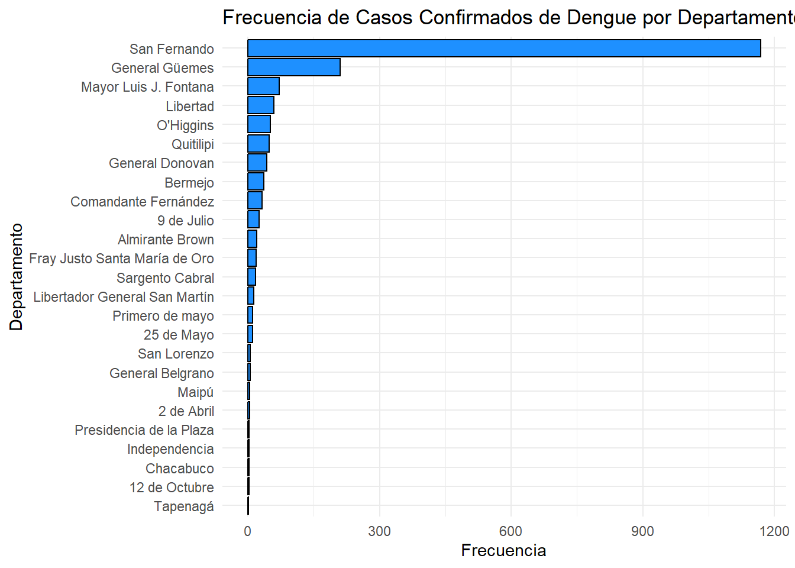
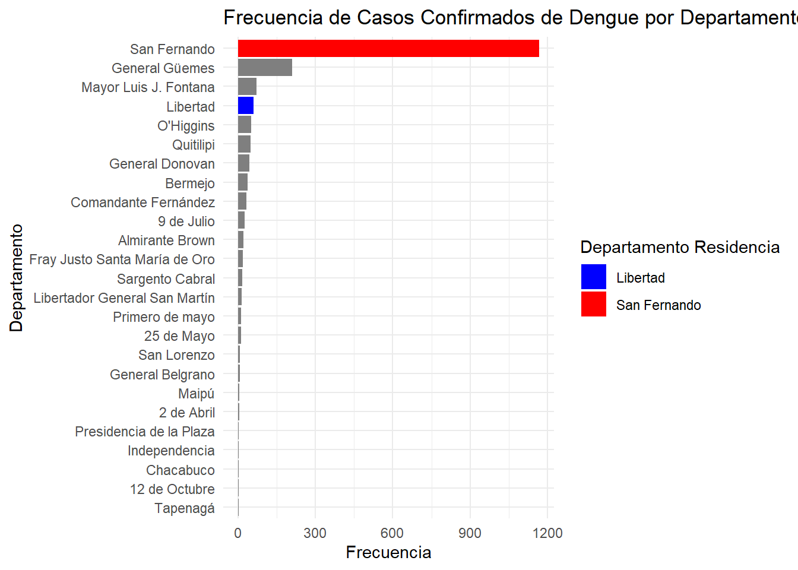
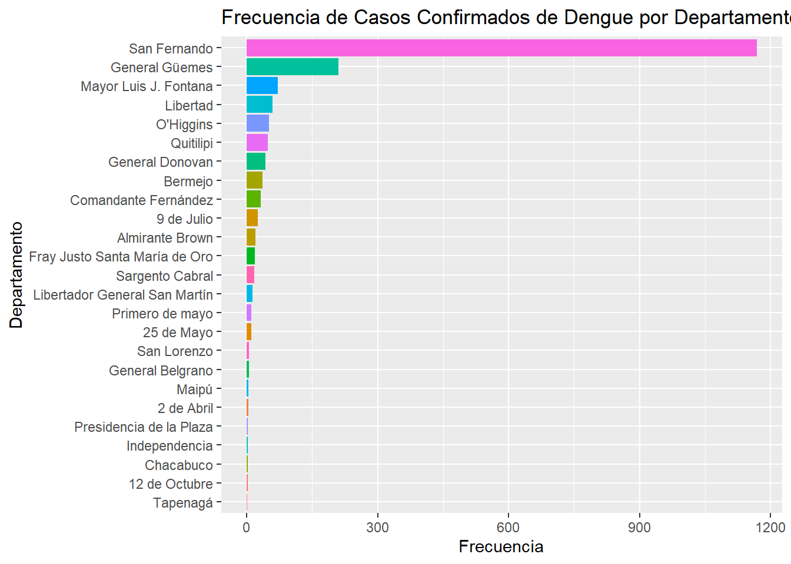
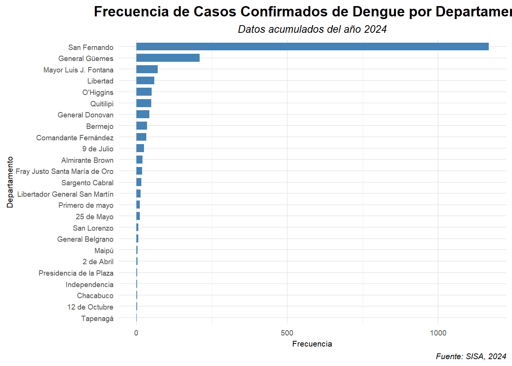
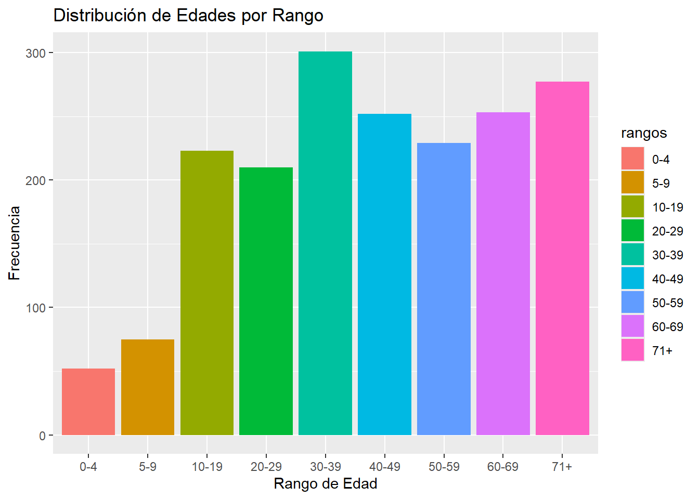
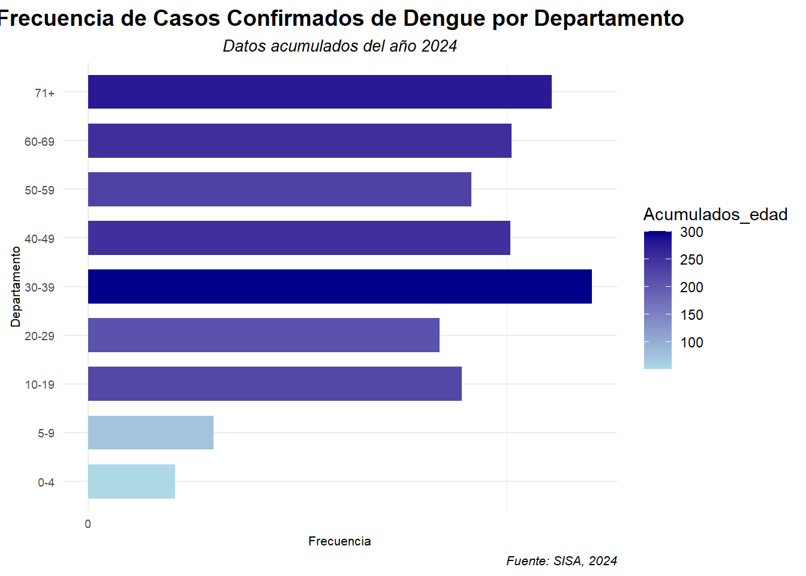
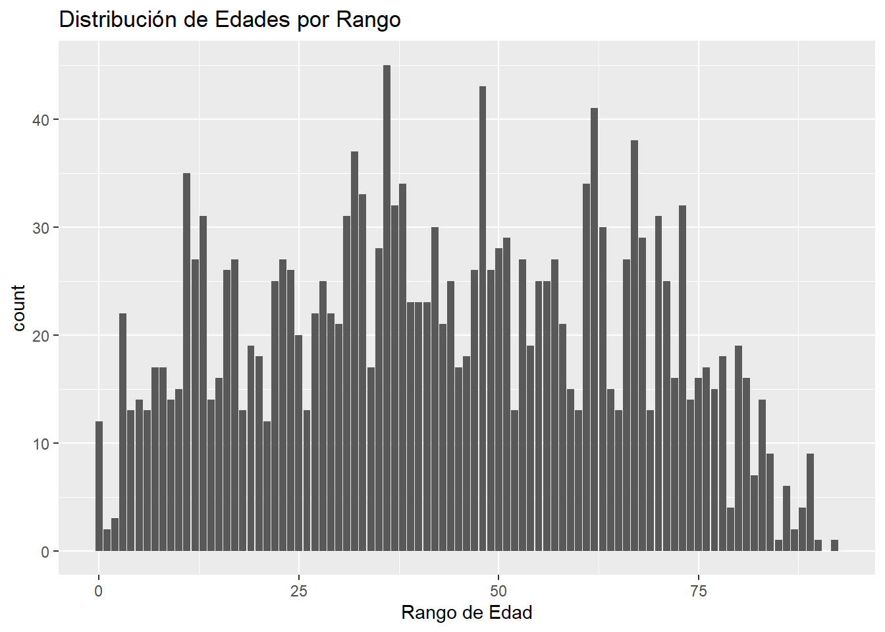

library(readxl)
library(dplyr)
Adjuntando el paquete: 'dplyr'The following objects are masked from 'package:stats':
filter, lagThe following objects are masked from 'package:base':
intersect, setdiff, setequal, unionEn primer lugar para comenzar nuevamente nuestro proceso de manipulación de datos vamos a traer nuestro data frame que ya trabajamos anteriormente.
library(readxl)
library(dplyr)
Adjuntando el paquete: 'dplyr'The following objects are masked from 'package:stats':
filter, lagThe following objects are masked from 'package:base':
intersect, setdiff, setequal, uniondengue_id <- read_excel("C:/Users/flor/Desktop/cursor_2024/VigilanciaenR/dengue_id.xlsx") Corrobormaos con str() que los datos que necesito los lea de forma adecuada:
str(dengue_id)tibble [4,695 × 24] (S3: tbl_df/tbl/data.frame)
$ Apellido Ciudadano : chr [1:4695] "GARCIA GAVELLO" "SEGOVIA" "ABALOS" "PIRIZ" ...
$ Calle Domicilio : chr [1:4695] "CEIBO" "ISLAS MALVINAS" "AV. ARRIBALZAGA" "LOTE" ...
$ Departamento Residencia : chr [1:4695] "San Fernando" "25 de Mayo" "San Fernando" "Mayor Luis J. Fontana" ...
$ Edad Actual : num [1:4695] 38 19 33 29 35 41 24 69 44 40 ...
$ Fecha Nacimiento : POSIXct[1:4695], format: "1986-04-17" "2005-02-07" ...
$ Localidad Residencia : chr [1:4695] "FONTANA" "MACHAGAI" "RESISTENCIA" "ENRIQUE URIEN" ...
$ Información de contacto : chr [1:4695] NA NA NA NA ...
$ Nombre Ciudadano : chr [1:4695] "MARIA CINTHIA YANINA" "KEVIN ARIEL" "SANTIAGO GERMAN" "ELIDA ROSANA" ...
$ Nro Doc : num [1:4695] 32088648 46462652 34793111 36924972 34702003 ...
$ Numero Domicilio : chr [1:4695] "899" "530" "1350" "12" ...
$ Provincia Residencia : chr [1:4695] "Chaco" "Chaco" "Chaco" "Chaco" ...
$ Sexo Legal : chr [1:4695] "F" "M" "M" "F" ...
$ Clasificación manual del caso: chr [1:4695] "Caso sospechoso no conclusivo" "Caso de Dengue en brote con laboratorio (+)" "Caso probable" "Caso de Dengue en brote con laboratorio (+)" ...
$ Establecimiento de Carga : chr [1:4695] "LABORATORIO PUEYRREDON - CENTRO DE ESTUDIOS MOLECULARES (DRA. GAZZO, ADRIANA)" "HOSPITAL DR. ANDRES DIAZ Y PEREYRO" "LABORATORIO DE ANALISIS CLINICOS GUEMES" "HOSPITAL DR. SALVADOR MAZZA" ...
$ Evento : chr [1:4695] "Dengue" "Dengue" "Dengue" "Dengue" ...
$ Fecha Apertura : POSIXct[1:4695], format: "2024-03-11" "2024-03-22" ...
$ Fecha de inicio de síntomas : POSIXct[1:4695], format: NA NA ...
$ Determinación : chr [1:4695] "IgG DENV" "Antígeno NS1" "Antígeno NS1" "Antígeno NS1" ...
$ Resultado : chr [1:4695] "Negativo" "Reactivo" "Reactivo" "Reactivo" ...
$ Técnica : chr [1:4695] "Inmunocromatografía" "Inmunocromatografía" "Inmunocromatografía" "Inmunocromatografía" ...
$ Fecha de toma de muestra : POSIXct[1:4695], format: "2024-03-09" "2024-03-22" ...
$ semana_epi : num [1:4695] 10 12 11 9 10 12 11 10 10 11 ...
$ clasificacion_casos : chr [1:4695] "sospechoso" "confirmado" "probable" "confirmado" ...
$ id_caso : chr [1:4695] "32088648_2024-03-09" "46462652_2024-03-22" "34793111_2024-03-15" "36924972_2024-02-26" ...Es necesario pasar las fechas a formato "date"
dengue_id <- dengue_id %>%
mutate(across(c("Fecha de toma de muestra", "Fecha de inicio de síntomas", "Fecha Apertura", "Fecha Nacimiento"), as.Date))# Verificamos la columna que nos interesa
class(dengue_id$`Fecha de toma de muestra`)[1] "Date"En primer lugar vamos a preprarar nuestros datos para conformar la primer tabla que tenemos, y los gráficos necesarios. Para ello primero tenemos que trabajar sólo con los con los datos confirmados.
Los resultados que tenemos en el data frame “dengue_id” tienen una identificacion por fila que contiene DNI y fecha de toma de muestra concatenados, esto puede tener más de un dni y fecha repetidos, ya que son resultados de laboratorio.
Para tomar los duplicados tenemos varias formas de hacerlo, veremos algunas de ellas:
Función del paquete dplyr:
duplicados <- dengue_id %>%
group_by(id_caso) %>%
filter(n() > 1) %>%
ungroup()Esto es lo que hicimos arriba:
duplicados <- dengue_id %>%:
duplicados <-: Crea un nuevo objeto llamado duplicados que almacenará el resultado de la operación.
dengue_id %>%: Indica que vamos a trabajar con el data frame dengue_id y aplicar una serie de operaciones sobre él utilizando la sintaxis de pipes (%>%) de la librería dplyr.
group_by(id_caso):
dengue_id según los valores únicos de la columna id_caso. Esto significa que todas las filas con el mismo valor en id_caso se agruparán juntas.filter(n() > 1):
Filtra los grupos creados en el paso anterior.
n() cuenta el número de filas en cada grupo.
filter(n() > 1) selecciona solo aquellos grupos que tienen más de una fila, es decir, donde el valor de id_caso se repite al menos una vez.
ungroup():
Paquete janitor:
# install.packages("janitor")library(janitor)
Adjuntando el paquete: 'janitor'The following objects are masked from 'package:stats':
chisq.test, fisher.test# Identificar filas duplicadas en todo el data frame
duplicados_j <- get_dupes(dengue_id, id_caso)
print(duplicados_j)# A tibble: 2,924 × 25
id_caso dupe_count `Apellido Ciudadano` `Calle Domicilio`
<chr> <int> <chr> <chr>
1 36900869_2024-03-22 6 BARBOZA AMADEO BELIGOY
2 36900869_2024-03-22 6 BARBOZA AMADEO BELIGOY
3 36900869_2024-03-22 6 BARBOZA AMADEO BELIGOY
4 36900869_2024-03-22 6 BARBOZA AMADEO BELIGOY
5 36900869_2024-03-22 6 BARBOZA AMADEO BELIGOY
6 36900869_2024-03-22 6 BARBOZA AMADEO BELIGOY
7 39306821_2024-03-25 4 MENDOZA PLANTA URBANA
8 39306821_2024-03-25 4 MENDOZA PLANTA URBANA
9 39306821_2024-03-25 4 MENDOZA PLANTA URBANA
10 39306821_2024-03-25 4 MENDOZA PLANTA URBANA
# ℹ 2,914 more rows
# ℹ 21 more variables: `Departamento Residencia` <chr>, `Edad Actual` <dbl>,
# `Fecha Nacimiento` <date>, `Localidad Residencia` <chr>,
# `Información de contacto` <chr>, `Nombre Ciudadano` <chr>, `Nro Doc` <dbl>,
# `Numero Domicilio` <chr>, `Provincia Residencia` <chr>, `Sexo Legal` <chr>,
# `Clasificación manual del caso` <chr>, `Establecimiento de Carga` <chr>,
# Evento <chr>, `Fecha Apertura` <date>, …duplicados_j <-:
duplicados_j para almacenar el resultado de la operación. Este nuevo objeto será un data frame que contendrá todas las filas duplicadas que se encuentren.get_dupes(dengue_id, id_caso):
get_dupes: Esta función busca específicamente filas duplicadas en un data frame.
dengue_id: Indica el nombre del data frame que se va a analizar. En este caso, estamos buscando duplicados en un data frame llamado dengue_id.
id_caso: Especifica la columna en la que se buscarán los duplicados. Es decir, la función se centrará en encontrar filas donde el valor en la columna id_caso se repita.
Aquí no lo realizaremos en nuestro marco de datos porque antes necesitamos filtrar “confirmados”.
Pero es bueno saber como hacerlo en caso que sea necesario.
Una vez identificados los duplicados, podemos eliminarlos usando la función unique() o distinct() del paquete dplyr.
# Eliminar filas duplicadas
datos_sin_duplicados <- distinct(duplicados_j, id_caso, .keep_all = TRUE)datos_sin_duplicados <-:
datos_sin_duplicados para almacenar el resultado de la operación que se realizará. Este nuevo objeto será un data frame.distinct(duplicados_j):
distinct() al data frame duplicados_j. Esta función se utiliza para identificar y eliminar filas duplicadas en un data frame.id_caso, .keep_all = TRUE:
id_caso: Especifica que se buscarán duplicados únicamente en la columna id_caso. Es decir, se eliminarán las filas que tengan el mismo valor en la columna id_caso.
.keep_all = TRUE: Esta opción adicional indica que se deben mantener todas las columnas del data frame original, incluso si tienen valores duplicados dentro de un mismo id_caso.
3.1.2 También podemos contar la cantidad de duplicados por caso:
Para contar el número de veces que se duplica cada valor, puedes usar count():
sum_duplicados <- duplicados_j %>%
count(id_caso) %>%
filter(n > 1)En nuestro análisis es necesario además conocer los valores que no se encuentran duplicados:
# Filtrar los datos que no son duplicados
no_duplicados <- dengue_id %>%
group_by(id_caso) %>%
filter(n() == 1) %>%
ungroup()Seleccionaremos entonces de nuestros marcos de datos: los duplicados y los no duplicados sólo aquellos valores que dan como resultado confirmado, ya que este dato nos sirve para la construcción de nuestras tablas y gráficos:
duplicados_conf <- duplicados %>%
filter(clasificacion_casos == "confirmado")no_duplicados_conf <- no_duplicados %>%
filter(clasificacion_casos == "confirmado")Uniremos entonces los dos marcos de datos para tener un data frame completo de datos confirmados:
# Unir los data frames duplicados y no_duplicados
datos_unidos <- bind_rows(duplicados_conf, no_duplicados_conf)
# Mostrar el resultado
print(datos_unidos)# A tibble: 1,872 × 24
`Apellido Ciudadano` `Calle Domicilio` Departamento Residen…¹ `Edad Actual`
<chr> <chr> <chr> <dbl>
1 SEGOVIA ISLAS MALVINAS 25 de Mayo 19
2 PIRIZ LOTE Mayor Luis J. Fontana 29
3 LOBOS JUAN DOMINGO PERON San Fernando 41
4 ESQUEFF MANZANA 154 PARCEL… Comandante Fernández 89
5 DUARTE ZORZAL San Fernando 73
6 ORELLANA EL ESPINILLO General Güemes 35
7 ALEJANDRE JUAN B.JUSTO 270 Mayor Luis J. Fontana 27
8 GONZALEZ KRIEGEL GERARDO VARELA San Fernando 57
9 DURE GONZALEZ MZ 41 PC 13 San Fernando 73
10 BARBOZA AMADEO BELIGOY Libertad 32
# ℹ 1,862 more rows
# ℹ abbreviated name: ¹`Departamento Residencia`
# ℹ 20 more variables: `Fecha Nacimiento` <date>, `Localidad Residencia` <chr>,
# `Información de contacto` <chr>, `Nombre Ciudadano` <chr>, `Nro Doc` <dbl>,
# `Numero Domicilio` <chr>, `Provincia Residencia` <chr>, `Sexo Legal` <chr>,
# `Clasificación manual del caso` <chr>, `Establecimiento de Carga` <chr>,
# Evento <chr>, `Fecha Apertura` <date>, …datos_unidos <- bind_rows(duplicados, no_duplicados):
datos_unidos <-: Crea un nuevo data frame llamado datos_unidos donde se almacenará el resultado de la unión.
bind_rows(duplicados, no_duplicados): Esta parte es la clave. La función bind_rows() del paquete dplyr toma dos o más data frames y los une verticalmente, es decir, uno debajo del otro.
Finalmente armaremos un data frame con las columnas que vamos a trabajar para tener los datos resumidos:
dengue_resumido <- datos_unidos %>%
select(`Fecha de toma de muestra`,`Departamento Residencia`,`Localidad Residencia`,semana_epi, id_caso, `Edad Actual`) Para ello primero debemos construir la columna de “Región sanitaria” ya que no existe, y para ello debemos categorizar los departamentos en números. Primero veremos que datos tenemos de la columna: Departamento Residencia y Localidad Residencia.
# Ver valores únicos
valores_unicos_dep <- unique(dengue_resumido$`Departamento Residencia`)
print(valores_unicos_dep) [1] "25 de Mayo" "Mayor Luis J. Fontana"
[3] "San Fernando" "Comandante Fernández"
[5] "General Güemes" "Libertad"
[7] "O'Higgins" "General Donovan"
[9] "Bermejo" "Presidencia de la Plaza"
[11] "Quitilipi" "2 de Abril"
[13] "Almirante Brown" "9 de Julio"
[15] "General Belgrano" "Sargento Cabral"
[17] "Fray Justo Santa María de Oro" "Libertador General San Martín"
[19] "San Lorenzo" "Independencia"
[21] "Maipú" "1º de Mayo"
[23] "12 de Octubre" "Tapenagá"
[25] "Chacabuco" # Ver valores únicos
valores_unicos_loc <- unique(dengue_resumido$`Localidad Residencia`)
print(valores_unicos_loc) [1] "MACHAGAI" "ENRIQUE URIEN"
[3] "RESISTENCIA" "PRESIDENCIA ROQUE SAENZ PENA"
[5] NA "VILLA ANGELA"
[7] "PUERTO TIROL" "SAN BERNARDO"
[9] "FONTANA" "JUAN JOSE CASTELLI"
[11] "MAKALLE" "LA CLOTILDE"
[13] "BARRANQUERAS" "LA LEONESA"
[15] "PRESIDENCIA DE LA PLAZA" "QUITILIPI"
[17] "HERMOSO CAMPO" "MIRAFLORES"
[19] "COLONIA POPULAR" "PAMPA DEL INFIERNO"
[21] "LAS BREÑAS" "CORZUELA"
[23] "COLONIA ELISA" "EL ESPINILLO"
[25] "LA ESCONDIDA" "SANTA SYLVINA"
[27] "LOS FRENTONES" "PAMPA DEL INDIO"
[29] "LA VERDE" "SELVAS DEL RIO DE ORO"
[31] "LAS PALMAS" "PUERTO EVA PERON"
[33] "VILLA BERTHET" "FUERTE ESPERANZA"
[35] "AVIA TERAI" "COLONIAS UNIDAS"
[37] "TRES ISLETAS" "MARGARITA BELEN"
[39] "GENERAL VEDIA" "PUERTO VILELAS"
[41] "EL SAUZALITO" "CORONEL DU GRATY"
[43] "VILLA RIO BERMEJITO" "GANCEDO"
[45] "FORTIN LAVALLE" "CHOROTIS"
[47] "COTE LAI" "TACO POZO"
[49] "LA TIGRA" "COLONIA BENITEZ"
[51] "BASAIL" "CHARATA"
[53] "CAPITAN SOLARI" "GENERAL PINEDO"
[55] "CIERVO PETISO" "LAPACHITO"
[57] "CONCEPCION DEL BERMEJO" Vamos a generar entonces un condicional para la creación de la columna de “Región Sanitaria” por “Departamentos de Residencia”
dengue_regiones <- dengue_resumido %>%
mutate(
region_sanitaria = case_when(
`Departamento Residencia` %in% c(
"Fray Justo Santa María de Oro","O'Higgins","Mayor Luis J. Fontana", "San Lorenzo") ~ 1,
`Departamento Residencia` %in% c(
"Quitilipi","25 de Mayo", "Presidencia de la Plaza","Sargento Cabral") ~ 2,
`Departamento Residencia` %in% c(
"San Fernando","General Donovan", "Bermejo","Libertad","Tapenagá","1º de Mayo") ~ 3,
`Departamento Residencia` %in% c(
"9 de Julio","12 de Octubre","2 de Abril","Chacabuco","General Belgrano") ~ 4,
`Departamento Residencia` %in% c(
"General Güemes","Maipú") ~ 5,
`Departamento Residencia` %in% c(
"Libertador General San Martín") ~ 6,
`Departamento Residencia` %in% c(
"Almirante Brown","Independencia","Comandante Fernández") ~ 7,
`Departamento Residencia` %in% c(
"San Fernando","Independencia","Comandante Fernández") ~ 8,
)
)Esto es solo para visualizar: para observar la fecha de toma de muestra podemos ordenarla según fecha:
dengue_regiones <- dengue_regiones %>%
arrange(`Fecha de toma de muestra`)Vamos primero a conocer que Localidades se corresponden con que Deparamentos. Para ello crearemos un data frame con localidad por Departamento que no contenga repetidos de localidad pero si mantenga el departamento por más que este repetido. Y además seleccionaremos las columnas que necesitamos para ello:
# Crear nuevo data frame sin repeticiones de localidades
dengue_localidad_unicas <- dengue_regiones %>%
group_by(`Departamento Residencia`) %>%
distinct(`Localidad Residencia`, .keep_all = TRUE) %>%
ungroup() %>%
select(region_sanitaria,`Departamento Residencia`, `Localidad Residencia`)Esto hicimos arriba:
dengue_localidad_unicas <-:
dengue_localidad_unicas que almacenará el resultado de la operación.dengue_regiones %>%:
dengue_regiones como punto de partida para las siguientes operaciones. El símbolo %>% es el operador pipe de dplyr, que permite encadenar operaciones de manera más legible.group_by:
group_by(Departamento Residencia): Agrupa los datos por la columna “Departamento Residencia”, creando grupos para cada departamento.distinct(Localidad Residencia, .keep_all = TRUE):
distinct(): Esta función identifica y elimina filas duplicadas en un data frame.
(Localidad Residencia): Especifica que se buscarán duplicados únicamente en la columna “Localidad Residencia”. Es decir, se eliminarán las filas que tengan la misma localidad de residencia.
.keep_all = TRUE: Esta opción adicional indica que se deben mantener todas las columnas del data frame original, incluso si tienen valores duplicados dentro de una misma localidad.
group_by(Departamento Residencia): Agrupa los datos por la columna “Departamento Residencia”, creando grupos para cada departamento.
select(region_sanitaria,Departamento Residencia,Localidad Residencia):
select(): Esta función selecciona las columnas específicas que quieres mantener en el nuevo data frame.
region_sanitaria, Departamento Residencia, Localidad Residencia: Indica que sólo se quieren conservar estas tres columnas en el nuevo data frame.
Identificamos entonces acumulados por departamento y por localidad:
library(stringr)
depto_acum <- dengue_regiones %>%
group_by(`Departamento Residencia`) %>%
count() %>%
ungroup() %>%
mutate(`Departamento Residencia` = str_replace(`Departamento Residencia`, "1º de Mayo", "Primero de mayo"))
depto_acum# A tibble: 25 × 2
`Departamento Residencia` n
<chr> <int>
1 12 de Octubre 3
2 Primero de mayo 11
3 2 de Abril 4
4 25 de Mayo 11
5 9 de Julio 26
6 Almirante Brown 20
7 Bermejo 36
8 Chacabuco 3
9 Comandante Fernández 33
10 Fray Justo Santa María de Oro 19
# ℹ 15 more rowsdepto_acum <- dengue_regiones %>%:
Se crea un nuevo data frame llamado depto_acum que almacenará el resultado de las operaciones siguientes.
Se toma el data frame original dengue_regiones como punto de partida.
group_by(Departamento Residencia):
dengue_regiones por la columna Departamento Residencia. Esto significa que se agruparán todas las filas que tengan el mismo valor en esa columna.count():
ungroup():
mutate(Departamento Residencia= str_replace(Departamento Residencia, "1º de Mayo", "Primero de mayo")):
mutate(): Se agrega una nueva columna o se modifican valores en columnas existentes.
(Departamento Residencia= str_replace(Departamento Residencia, "1º de Mayo", "Primero de mayo")):
Departamento Residencia. Esto es útil si quieres unificar la escritura de los nombres de los departamentos. La función str_replace() es de la librería stringr y se utiliza para realizar reemplazos de texto.Ahora hacemos lo mismo por Localidad de Residencia:
localidad_acumulados <- dengue_regiones %>%
group_by(region_sanitaria,`Departamento Residencia`, `Localidad Residencia`) %>%
count() %>%
rename(Acumulados = n) %>%
mutate(`Departamento Residencia` = str_replace(`Departamento Residencia`, "1º de Mayo", "Primero de mayo"))%>% ungroup()group_by(region_sanitaria,Departamento Residencia,Localidad Residencia):
dengue_regiones por tres columnas: region_sanitaria, Departamento Residencia y Localidad Residencia. Esto significa que se agruparán todas las filas que tengan los mismos valores en estas tres columnas.count():
rename(Acumulados = n):
n a Acumulados. Esto hace que el nombre de la columna sea más descriptivo.ungroup():
Ahora supongamos que en nuestra limpieza de datos se nos pasaron algunos datos faltantes con la incripción: (SIN DATO)
Un ciclo for es una estructura de control en programación que permite repetir un bloque de código un número determinado de veces. Es como una máquina que ejecuta una tarea una y otra vez hasta que se cumple una condición específica.
# Suponiendo que "dengue_regiones" es tu DataFrame
valor_a_buscar <- "*(SIN DATO)*" # Reemplaza con el valor que buscas
for (col in names(dengue_regiones)) {
if (valor_a_buscar %in% dengue_regiones[[col]]) {
print(paste("El valor", valor_a_buscar, "se encontró en la columna", col))
# Agregar la columna a la lista de resultados
resultados[[col]] <- dengue_regiones[[col]]
}
}Asignación del valor a buscar:
valor_a_buscar <- "*(SIN DATO)*": Se asigna el valor “SIN DATO” a una variable llamada valor_a_buscar. Este es el valor específico que queremos encontrar en nuestro DataFrame.Creación de una lista vacía:
resultados <- list(): Se crea una lista vacía llamada resultados. Esta lista servirá para almacenar las columnas del DataFrame donde se encuentre el valor buscado.Ciclo for para iterar sobre las columnas:
for (col in names(dengue_regiones)):
for: Esta palabra clave indica el inicio de un ciclo.
col in names(dengue_regiones): Significa que la variable col tomará sucesivamente el valor de cada nombre de columna del DataFrame dengue_regiones. En cada iteración, col representará una columna diferente.
Condición para verificar si el valor está en la columna:
if (valor_a_buscar %in% dengue_regiones[[col]]):
if: Esta palabra clave introduce una condición.
valor_a_buscar %in% dengue_regiones[[col]]: Verifica si el valor_a_buscar se encuentra dentro de los valores de la columna actual (accedida mediante dengue_regiones[[col]]). Si el valor se encuentra al menos una vez en la columna, la condición es verdadera.
Acciones si se encuentra el valor:
Imprimir un mensaje: Si la condición del if es verdadera, se imprime un mensaje indicando en qué columna se encontró el valor.
Agregar la columna a la lista de resultados: Se agrega la columna completa donde se encontró el valor a la lista resultados. Esto permite guardar las columnas relevantes para un análisis posterior.
Estructura básica del ciclo for en R:
# for (i in secuencia) {
# # Código a ejecutar en cada iteración
# }i: Es una variable que tomará el valor de cada elemento de la secuencia en cada iteración.
secuencia: Puede ser un vector, una lista o cualquier otro objeto iterable que defina los valores que tomará i.
# Código a ejecutar en cada iteración: Es el bloque de código que se ejecutará repetidamente para cada valor de i.
# Fragmento de código
ciudades <- c("Resistencia", "San Fernando", "San Lorenzo")
for (ciudad in ciudades) {
print(paste("Los casos confirmados residen en:", ciudad))
}[1] "Los casos confirmados residen en: Resistencia"
[1] "Los casos confirmados residen en: San Fernando"
[1] "Los casos confirmados residen en: San Lorenzo"for (i in 1:5) {
# Imprime la suma del valor actual de i
print(i+2)
}[1] 3
[1] 4
[1] 5
[1] 6
[1] 7Si hubieramos encontrado datos faltantes con esos nombres podríamos utilizar esta línea para pasarlos a na:
localidad_acumulados <- localidad_acumulados %>%
mutate(across(where(is.character), ~ na_if(., "*SIN DATO* (*SIN DATO*)"))) Este es un ejemplo si estamos contando desde el día de hoy, pero como trabajamos con datos de marzo no lo vamos a correr:
# No ejecuto este, solo si lo saco desde hoy...
# dengue_acumulados_semana <- dengue_regiones %>%
# filter(`Fecha de toma de muestra` >= today() - weeks(1)) %>% # Filtra datos de la última semana
# count(`Fecha de toma de muestra`) %>%
# rename(Frecuencia_2 = n)
# >= today():
today() es una función del paquete lubridate que devuelve la fecha actual (es decir, el día de hoy).
>= significa “mayor o igual que”. Por lo tanto, esta parte del código está diciendo que seleccionemos las filas donde la fecha de la muestra es igual o posterior a un determinado día.
today() - weeks(1):
weeks(1): Esta función de lubridate genera un intervalo de tiempo de una semana.
today() - weeks(1): Le resta una semana a la fecha actual, por lo que nos da la fecha exacta de hace 7 días.
En conjunto, esto significa que se está comparando la columna Fecha de toma de muestra para ver si es mayor o igual a la fecha de hace 7 días.
Acumulados por semana:
Ahora tomo los acumulados correspondientes a la última semana de marzo del 2024:
# En caso que sea marzo
library(dplyr)
library(lubridate)
Adjuntando el paquete: 'lubridate'The following objects are masked from 'package:base':
date, intersect, setdiff, unionultima_semana_marzo <- interval(ymd("2024-03-10"), ymd("2024-03-16"))
# Filtrar los datos por el intervalo de fechas y mantener las columnas necesarias
dengue_sem <- dengue_regiones %>%
filter(`Fecha de toma de muestra` %within% ultima_semana_marzo) %>%
group_by(`Departamento Residencia`, `Localidad Residencia`) %>%
count() %>%
rename(Acumulados_sem = n) %>%
ungroup()Esto es lo que hicimos arriba:
ultima_semana_marzo <- interval:Se crea un objeto llamado ultima_semana_marzo de tipo intervalo:
Un intervalo en lubridate representa un período de tiempo definido por una fecha y hora de inicio y una fecha y hora de fin. Es una manera de especificar un rango temporal para realizar análisis o filtrado de datos.
La función principal para crear intervalos en lubridate es interval(). Toma dos argumentos: la fecha y hora de inicio y la fecha y hora de fin.
La función %within% se utiliza para comprobar si una fecha o un intervalo cae dentro de otro intervalo.
Esta línea de código selecciona todas las filas donde la fecha de toma de muestra se encuentra dentro del intervalo ultima_semana_marzo.
Este intervalo abarca desde el 10 de marzo de 2024 hasta el 16 de marzo de 2024, inclusive.
Se crea un nuevo dataframe llamado dengue_sem a partir del dataframe original dengue_regiones.
Se utiliza la función filter de dplyr para seleccionar solo aquellas filas donde la columna Fecha de toma de muestra se encuentra dentro del intervalo definido anteriormente.
group_by: Se agrupan los datos por las columnas region_sanitaria, Departamento Residencia y Localidad Residencia.
La función count() cuenta la cantidad de observaciones en cada grupo, es decir, el número de casos de dengue en cada combinación de región, departamento y localidad.
Se renombra la columna resultante de count() (que por defecto se llama n) a Acumulados_sem para indicar que se trata del acumulado de casos en esa semana.
Se elimina el agrupamiento para poder realizar otras operaciones si fuera necesario.
A modo de ejemplo: También podemos hacerlo por la última semana epidemiológica:
# Este tampoco se ejecuta, solo si lo queiro hacer por semana:
# dengue_semana-epi <- dengue_regiones %>%
# filter(semana_epi == max(semana_epi, na.rm = TRUE)) %>% # Filtra la última semana
# count(`Localidad Residencia`) %>%
# rename(Frecuencia_2 = n) Esto es lo que hicimos arriba
Filtrado por la última semana epidemiológica:
filter(semana_epi == max(semana_epi, na.rm = TRUE)) %>%:
filter(): Esta función se utiliza para seleccionar las filas que cumplen una determinada condición.
semana_epi == max(semana_epi, na.rm = TRUE): Aquí se filtra para seleccionar las filas donde la columna semana_epi tiene el valor máximo. Esto significa que se están seleccionando los registros correspondientes a la última semana epidemiológica en los datos.
na.rm = TRUE: Este argumento indica que se deben omitir los valores NA (Not Available, es decir, valores faltantes) al calcular el máximo.
Conteo de casos por localidad:
count(Localidad Residencia) %>%:
count(): Esta función cuenta el número de observaciones por grupo. En este caso, se agrupa por la columna Localidad Residencia y cuenta cuántos registros hay en cada localidad.Renombramiento de la columna:
rename(Frecuencia_2 = n):
rename(): Esta función se utiliza para cambiar el nombre de una columna.
Se cambia el nombre de la columna resultante del conteo (n, que por defecto contiene el número de observaciones en cada grupo) a Frecuencia_2.
Otro ejemplo: si queremos contar los acumulados por semana epidemiológica.
# Ejemplo de conteo por semana epidemiológica
# df_semana <- dengue_regiones %>%
# group_by(semana_epi) %>%
# summarise(cantidad_casos = n(), .groups = 'drop')
#
#
# print(df_semana)group_by(semana_epi): Agrupa los datos por la columna semana_epi (semana epidemiológica).
summarise(cantidad_casos = n()): Cuenta cuántas filas hay en cada grupo, lo que representa el número de casos por cada semana.
.groups = 'drop': Desagrupar después de hacer la sumarización.
Este código te devolverá un resumen con la cantidad de casos por cada semana epidemiológica.
Ahora necesitaremos para la tabla obtener un sólo data frame con la información de los acumulados por semana y por Localidad. Esto lo obtengo de dos marcos de datos distintos: localidades_acumulados y dengue_sem, donde colocaremos 0 en caso que no haya datos.
Un Left Join (unión por la izquierda) es una operación en bases de datos que combina filas de dos tablas basándose en un campo común, pero manteniendo todas las filas de la tabla de la izquierda (la primera tabla en la operación).
dengue_join <- localidad_acumulados %>%
left_join(dengue_sem, by = c(
"Localidad Residencia","Departamento Residencia"
)) %>%
mutate(Acumulados_sem = coalesce(Acumulados_sem, 0),
Acumulados = coalesce(Acumulados, 0))Esto hicimos arriba:
left_join(dengue_sem, by = c("Localidad Residencia", "Departamento Residencia")) %>%:
Esta línea realiza una operación de left join entre dos data frames: localidad_acumulados y dengue_sem.
El left join combina los datos de ambos data frames basándose en las columnas especificadas. En este caso, la combinación se realiza usando las columnas "Localidad Residencia" y "Departamento Residencia".
El left join asegura que todas las filas del data frame de la izquierda (localidad_acumulados) se mantendrán, y se agregarán las columnas del data frame de la derecha (dengue_sem) donde haya coincidencias. Si no hay coincidencias, las columnas del data frame de la derecha tendrán valores NA.
mutate(Acumulados_sem = coalesce(Acumulados_sem, 0),:
La función mutate se usa para crear nuevas columnas o modificar las existentes en el data frame.
En este caso, se está creando o modificando la columna Acumulados_sem. La función coalesce se utiliza para reemplazar los valores NA en Acumulados_sem con 0. En otras palabras, si Acumulados_sem tiene un valor NA, este se reemplazará por 0.
Acumulados = coalesce(Acumulados, 0)):
Acumulados tenga 0 en lugar de valores NA.# El código de left_join()
# dataframe_combinado <- left_join(dataframe1, dataframe2, by = "columna_comun")Otros tipos de join:
inner_join: Solo mantiene las filas que tienen coincidencias en ambas tablas.
right_join: Es lo opuesto a left_join, mantiene todas las filas del dataframe de la derecha.
full_join: Mantiene todas las filas de ambos dataframes.
Renombro las columnas para mi tabla (esto se puede realizar en lo propia tabla también es opcional)
dengue_final <- dengue_join %>%
rename(
`Region Sanitaria` = region_sanitaria,
`Confirmados última semana` = Acumulados_sem,
Localidad = `Localidad Residencia`,
Departamento = `Departamento Residencia`) %>%
group_by(Departamento) %>% # Agrupar por Departamento
arrange(Departamento) %>%
ungroup()
dengue_final# A tibble: 63 × 5
`Region Sanitaria` Departamento Localidad Acumulados Confirmados última s…¹
<dbl> <chr> <chr> <dbl> <dbl>
1 4 12 de Octubre GANCEDO 2 0
2 4 12 de Octubre GENERAL … 1 0
3 4 2 de Abril HERMOSO … 4 0
4 2 25 de Mayo MACHAGAI 10 0
5 2 25 de Mayo <NA> 1 0
6 4 9 de Julio LAS BREÑ… 26 2
7 7 Almirante Bro… CONCEPCI… 1 0
8 7 Almirante Bro… LOS FREN… 3 0
9 7 Almirante Bro… PAMPA DE… 10 1
10 7 Almirante Bro… TACO POZO 4 0
# ℹ 53 more rows
# ℹ abbreviated name: ¹`Confirmados última semana`Para la creación de tablas es posible construirla de distintas maneras con una variedad de librerias. Aquí veremos la función gt() y flextable().
Cargamos la librería:
library(gt)Como una opción bien simple podemos visualizar la tabla simplemente llamando a esta librería:
# Crear una tabla básica con gt
tabla <- dengue_final %>%
gt()
# Visualizar la tabla
tabla| Region Sanitaria | Departamento | Localidad | Acumulados | Confirmados última semana |
|---|---|---|---|---|
| 4 | 12 de Octubre | GANCEDO | 2 | 0 |
| 4 | 12 de Octubre | GENERAL PINEDO | 1 | 0 |
| 4 | 2 de Abril | HERMOSO CAMPO | 4 | 0 |
| 2 | 25 de Mayo | MACHAGAI | 10 | 0 |
| 2 | 25 de Mayo | NA | 1 | 0 |
| 4 | 9 de Julio | LAS BREÑAS | 26 | 2 |
| 7 | Almirante Brown | CONCEPCION DEL BERMEJO | 1 | 0 |
| 7 | Almirante Brown | LOS FRENTONES | 3 | 0 |
| 7 | Almirante Brown | PAMPA DEL INFIERNO | 10 | 1 |
| 7 | Almirante Brown | TACO POZO | 4 | 0 |
| 7 | Almirante Brown | NA | 2 | 0 |
| 3 | Bermejo | GENERAL VEDIA | 5 | 0 |
| 3 | Bermejo | LA LEONESA | 21 | 0 |
| 3 | Bermejo | LAS PALMAS | 7 | 0 |
| 3 | Bermejo | PUERTO EVA PERON | 3 | 0 |
| 4 | Chacabuco | CHARATA | 3 | 3 |
| 7 | Comandante Fernández | PRESIDENCIA ROQUE SAENZ PENA | 33 | 8 |
| 1 | Fray Justo Santa María de Oro | CHOROTIS | 1 | 0 |
| 1 | Fray Justo Santa María de Oro | SANTA SYLVINA | 18 | 0 |
| 4 | General Belgrano | CORZUELA | 6 | 0 |
| 3 | General Donovan | LA ESCONDIDA | 26 | 4 |
| 3 | General Donovan | LA VERDE | 3 | 0 |
| 3 | General Donovan | LAPACHITO | 2 | 0 |
| 3 | General Donovan | MAKALLE | 12 | 2 |
| 5 | General Güemes | EL ESPINILLO | 3 | 0 |
| 5 | General Güemes | EL SAUZALITO | 1 | 1 |
| 5 | General Güemes | FORTIN LAVALLE | 1 | 0 |
| 5 | General Güemes | FUERTE ESPERANZA | 12 | 0 |
| 5 | General Güemes | JUAN JOSE CASTELLI | 165 | 28 |
| 5 | General Güemes | MIRAFLORES | 13 | 0 |
| 5 | General Güemes | VILLA RIO BERMEJITO | 2 | 0 |
| 5 | General Güemes | NA | 13 | 6 |
| 7 | Independencia | AVIA TERAI | 3 | 0 |
| 3 | Libertad | COLONIA POPULAR | 6 | 3 |
| 3 | Libertad | PUERTO TIROL | 53 | 15 |
| 6 | Libertador General San Martín | CIERVO PETISO | 1 | 1 |
| 6 | Libertador General San Martín | PAMPA DEL INDIO | 8 | 2 |
| 6 | Libertador General San Martín | SELVAS DEL RIO DE ORO | 2 | 0 |
| 6 | Libertador General San Martín | NA | 3 | 0 |
| 5 | Maipú | TRES ISLETAS | 4 | 0 |
| 1 | Mayor Luis J. Fontana | CORONEL DU GRATY | 21 | 0 |
| 1 | Mayor Luis J. Fontana | ENRIQUE URIEN | 2 | 0 |
| 1 | Mayor Luis J. Fontana | VILLA ANGELA | 46 | 1 |
| 1 | Mayor Luis J. Fontana | NA | 2 | 0 |
| 1 | O'Higgins | LA CLOTILDE | 14 | 1 |
| 1 | O'Higgins | LA TIGRA | 1 | 0 |
| 1 | O'Higgins | SAN BERNARDO | 36 | 5 |
| 2 | Presidencia de la Plaza | PRESIDENCIA DE LA PLAZA | 3 | 0 |
| 3 | Primero de mayo | COLONIA BENITEZ | 4 | 0 |
| 3 | Primero de mayo | MARGARITA BELEN | 7 | 0 |
| 2 | Quitilipi | QUITILIPI | 46 | 2 |
| 2 | Quitilipi | NA | 3 | 0 |
| 3 | San Fernando | BARRANQUERAS | 106 | 47 |
| 3 | San Fernando | BASAIL | 2 | 0 |
| 3 | San Fernando | FONTANA | 66 | 22 |
| 3 | San Fernando | PUERTO VILELAS | 11 | 3 |
| 3 | San Fernando | RESISTENCIA | 983 | 245 |
| 1 | San Lorenzo | VILLA BERTHET | 5 | 0 |
| 1 | San Lorenzo | NA | 1 | 0 |
| 2 | Sargento Cabral | CAPITAN SOLARI | 2 | 0 |
| 2 | Sargento Cabral | COLONIA ELISA | 11 | 1 |
| 2 | Sargento Cabral | COLONIAS UNIDAS | 4 | 0 |
| 3 | Tapenagá | COTE LAI | 2 | 0 |
Vamos a comenzar entonces a editar y formatearla como nos parezca mas claro y mejor para nuestro informe:
dengue_final %>%
gt(rowname_col = "Departamento") %>%
# Se crea una tabla con la función `gt` y se define que la columna "Departamento" será utilizada como los nombres de las filas.
tab_header(
title = md("**Casos Dengue**"),
subtitle = md("Casos *confirmados* de dengue según lugar de residencia, provincia del Chaco, año 2024")
) %>%
# Se define el encabezado de la tabla, con un título en negrita y un subtítulo en cursiva.
cols_label(
`Region Sanitaria` = md("Región <br>Sanitaria"), # Se etiqueta la columna "Región Sanitaria", con un salto de línea.
`Confirmados última semana` = md("Confirmados última<br>semana") # Se etiqueta la columna "Confirmados última semana", con un salto de línea.
) %>%
# Se establecen los nombres de las columnas con un formato personalizado, incluyendo saltos de línea.
opt_align_table_header(align = "left") %>%
# Alinea el encabezado de la tabla a la izquierda.
cols_width(
`Region Sanitaria` ~ px(200),
Departamento ~ px(200),
Localidad ~ px(200),
`Confirmados última semana` ~ px(150),
Acumulados ~ px(150)
) %>%
# Define el ancho de las columnas en píxeles para una mejor distribución del espacio en la tabla.
tab_source_note(
source_note = md("Fuente de datos: Sistema de Información Sanitaria Argentino **(SISA)**.")
) %>%
# Añade una nota al pie de la tabla indicando la fuente de los datos.
tab_footnote(
footnote = "Acumulados anuales",
locations = cells_column_labels(columns = Acumulados)
) %>%
# Agrega una nota al pie para la columna "Acumulados", indicando que son valores anuales.
tab_footnote(
footnote = "año 2024",
locations = cells_column_labels(columns = Acumulados)
) %>%
# Añade una segunda nota al pie para la columna "Acumulados", especificando el año.
tab_footnote(
footnote = "ver registro localidades",
locations = list(
cells_column_labels(columns = Localidad),
cells_body(columns = "Localidad")
)
) %>%
# Agrega una nota al pie a las celdas de la columna "Localidad", indicando que hay más información disponible.
data_color(
columns = c(Acumulados,`Confirmados última semana`),
colors = scales::col_numeric(
palette = c("#47e886","#f7616c"),
domain = c(0,500),
na.color = "#f7616c"
)
) %>%
# Aplica un formato de color a la columna "Acumulados", usando una paleta de colores que va del verde al rojo según el valor (de 0 a 3000).
opt_table_font(
font = google_font("montserrat"),
weight = 600
) %>%
# Cambia la fuente de la tabla a "Montserrat" y ajusta el grosor del texto a 600.
# Alinear el contenido de las columnas de manera específica
cols_align(
align = "left", columns = c(1,2) # Alinear las columnas 1 y 2 (por ejemplo, 'Región Sanitaria' y 'Departamento') a la izquierda
) %>%
cols_align(
align = "center", columns = c(1,4,5) # Alinear las columnas 1, 4 y 5 (por ejemplo, 'Localidad', 'Confirmados última semana', 'Acumulados') al centro
) Warning: Since gt v0.9.0, the `colors` argument has been deprecated.
• Please use the `fn` argument instead.
This warning is displayed once every 8 hours.Warning: Some values were outside the color scale and will be treated as NACasos Dengue |
||||
Casos confirmados de dengue según lugar de residencia, provincia del Chaco, año 2024 |
||||
Región |
Localidad1 | Acumulados2,3 | Confirmados última |
|
|---|---|---|---|---|
| 12 de Octubre | 4 | GANCEDO1 | 2 | 0 |
| 12 de Octubre | 4 | GENERAL PINEDO1 | 1 | 0 |
| 2 de Abril | 4 | HERMOSO CAMPO1 | 4 | 0 |
| 25 de Mayo | 2 | MACHAGAI1 | 10 | 0 |
| 25 de Mayo | 2 | NA1 | 1 | 0 |
| 9 de Julio | 4 | LAS BREÑAS1 | 26 | 2 |
| Almirante Brown | 7 | CONCEPCION DEL BERMEJO1 | 1 | 0 |
| Almirante Brown | 7 | LOS FRENTONES1 | 3 | 0 |
| Almirante Brown | 7 | PAMPA DEL INFIERNO1 | 10 | 1 |
| Almirante Brown | 7 | TACO POZO1 | 4 | 0 |
| Almirante Brown | 7 | NA1 | 2 | 0 |
| Bermejo | 3 | GENERAL VEDIA1 | 5 | 0 |
| Bermejo | 3 | LA LEONESA1 | 21 | 0 |
| Bermejo | 3 | LAS PALMAS1 | 7 | 0 |
| Bermejo | 3 | PUERTO EVA PERON1 | 3 | 0 |
| Chacabuco | 4 | CHARATA1 | 3 | 3 |
| Comandante Fernández | 7 | PRESIDENCIA ROQUE SAENZ PENA1 | 33 | 8 |
| Fray Justo Santa María de Oro | 1 | CHOROTIS1 | 1 | 0 |
| Fray Justo Santa María de Oro | 1 | SANTA SYLVINA1 | 18 | 0 |
| General Belgrano | 4 | CORZUELA1 | 6 | 0 |
| General Donovan | 3 | LA ESCONDIDA1 | 26 | 4 |
| General Donovan | 3 | LA VERDE1 | 3 | 0 |
| General Donovan | 3 | LAPACHITO1 | 2 | 0 |
| General Donovan | 3 | MAKALLE1 | 12 | 2 |
| General Güemes | 5 | EL ESPINILLO1 | 3 | 0 |
| General Güemes | 5 | EL SAUZALITO1 | 1 | 1 |
| General Güemes | 5 | FORTIN LAVALLE1 | 1 | 0 |
| General Güemes | 5 | FUERTE ESPERANZA1 | 12 | 0 |
| General Güemes | 5 | JUAN JOSE CASTELLI1 | 165 | 28 |
| General Güemes | 5 | MIRAFLORES1 | 13 | 0 |
| General Güemes | 5 | VILLA RIO BERMEJITO1 | 2 | 0 |
| General Güemes | 5 | NA1 | 13 | 6 |
| Independencia | 7 | AVIA TERAI1 | 3 | 0 |
| Libertad | 3 | COLONIA POPULAR1 | 6 | 3 |
| Libertad | 3 | PUERTO TIROL1 | 53 | 15 |
| Libertador General San Martín | 6 | CIERVO PETISO1 | 1 | 1 |
| Libertador General San Martín | 6 | PAMPA DEL INDIO1 | 8 | 2 |
| Libertador General San Martín | 6 | SELVAS DEL RIO DE ORO1 | 2 | 0 |
| Libertador General San Martín | 6 | NA1 | 3 | 0 |
| Maipú | 5 | TRES ISLETAS1 | 4 | 0 |
| Mayor Luis J. Fontana | 1 | CORONEL DU GRATY1 | 21 | 0 |
| Mayor Luis J. Fontana | 1 | ENRIQUE URIEN1 | 2 | 0 |
| Mayor Luis J. Fontana | 1 | VILLA ANGELA1 | 46 | 1 |
| Mayor Luis J. Fontana | 1 | NA1 | 2 | 0 |
| O'Higgins | 1 | LA CLOTILDE1 | 14 | 1 |
| O'Higgins | 1 | LA TIGRA1 | 1 | 0 |
| O'Higgins | 1 | SAN BERNARDO1 | 36 | 5 |
| Presidencia de la Plaza | 2 | PRESIDENCIA DE LA PLAZA1 | 3 | 0 |
| Primero de mayo | 3 | COLONIA BENITEZ1 | 4 | 0 |
| Primero de mayo | 3 | MARGARITA BELEN1 | 7 | 0 |
| Quitilipi | 2 | QUITILIPI1 | 46 | 2 |
| Quitilipi | 2 | NA1 | 3 | 0 |
| San Fernando | 3 | BARRANQUERAS1 | 106 | 47 |
| San Fernando | 3 | BASAIL1 | 2 | 0 |
| San Fernando | 3 | FONTANA1 | 66 | 22 |
| San Fernando | 3 | PUERTO VILELAS1 | 11 | 3 |
| San Fernando | 3 | RESISTENCIA1 | 983 | 245 |
| San Lorenzo | 1 | VILLA BERTHET1 | 5 | 0 |
| San Lorenzo | 1 | NA1 | 1 | 0 |
| Sargento Cabral | 2 | CAPITAN SOLARI1 | 2 | 0 |
| Sargento Cabral | 2 | COLONIA ELISA1 | 11 | 1 |
| Sargento Cabral | 2 | COLONIAS UNIDAS1 | 4 | 0 |
| Tapenagá | 3 | COTE LAI1 | 2 | 0 |
Fuente de datos: Sistema de Información Sanitaria Argentino (SISA). |
||||
| 1 ver registro localidades | ||||
| 2 Acumulados anuales | ||||
| 3 año 2024 | ||||
Podemos intentar que no se repita el Departamento por cada Localidad que le corresponde. Para ello primero los agruparemos y después le aplicaremos la función para la tabla:
# Llenar 'Departamento' solo en la primera fila de cada grupo
dengue_final_agrupado <- dengue_final %>%
arrange(Departamento) %>%
mutate(Departamento = ifelse(duplicated(Departamento), "", Departamento)) # Crear la tabla con gt
dengue_final_agrupado %>%
gt(rowname_col = "Departamento") %>% # Genera la tabla y asigna 'Departamento' como fila identificadora (rowname)
# Agregar el título y subtítulo a la tabla
tab_header(
title = md("**Casos Dengue**"), # Título en negrita usando Markdown
subtitle = md("Casos *confirmados* de dengue según lugar de residencia, provincia del Chaco, año 2024") # Subtítulo con formato Markdown, con 'confirmados' en cursiva
) %>%
# Etiquetas de las columnas, incluyendo saltos de línea en los nombres largos
cols_label(
`Region Sanitaria` = md("Región <br>Sanitaria"), # Saltar de línea en "Región Sanitaria"
`Confirmados última semana` = md("Confirmados última<br>semana") # Saltar de línea en "Confirmados última semana"
) %>%
# Alinear el encabezado de la tabla a la izquierda
opt_align_table_header(align = "left") %>%
# Definir el ancho de las columnas en píxeles
cols_width(
`Region Sanitaria` ~ px(200), # Ancho de la columna "Región Sanitaria" a 200 píxeles
Departamento ~ px(200), # Ancho de la columna "Departamento" a 200 píxeles
Localidad ~ px(200), # Ancho de la columna "Localidad" a 200 píxeles
`Confirmados última semana` ~ px(150), # Ancho de la columna "Confirmados última semana" a 150 píxeles
Acumulados ~ px(150) # Ancho de la columna "Acumulados" a 150 píxeles
) %>%
# Agregar una nota de fuente de datos en la parte inferior de la tabla
tab_source_note(
source_note = md("Fuente de datos: Sistema de Información Sanitaria Argentino **(SISA)**.") # Fuente en Markdown, con "SISA" en negrita
) %>%
# Agregar una nota al pie explicando la columna 'Acumulados'
tab_footnote(
footnote = "Acumulados anuales", # El texto de la nota al pie
locations = cells_column_labels(columns = Acumulados) # Ubicación de la nota: encabezado de la columna 'Acumulados'
) %>%
# Agregar una segunda nota al pie indicando el año
tab_footnote(
footnote = "año 2024", # Texto de la segunda nota
locations = cells_column_labels(columns = Acumulados) # Ubicación de la segunda nota: encabezado de la columna 'Acumulados'
) %>%
# Agregar una nota al pie específica para las celdas en la columna 'Localidad'
tab_footnote(
footnote = "ver registro localidades", # Texto de la nota para 'Localidad'
locations = list(
cells_column_labels(columns = Localidad), # Colocar la nota en el encabezado de 'Localidad'
cells_body(columns = "Localidad") # Colocar la nota en las celdas del cuerpo de la columna 'Localidad'
)
) %>%
# Aplicar un gradiente de color a la columna 'Acumulados' según sus valores
data_color(
columns = Acumulados, # Aplicar el color solo a la columna 'Acumulados'
colors = scales::col_numeric(
palette = c("#47e886", "#f7616c"), # Definir la paleta de colores, del verde (#47e886) al rojo (#f7616c)
domain = c(0, 3000) # Los valores en 'Acumulados' varían de 0 a 3000, lo que define el rango del gradiente
)
) %>%
# Establecer una fuente personalizada para la tabla utilizando Google Fonts
opt_table_font(
font = google_font("montserrat"), # Usa la fuente 'Montserrat'
weight = 600 # Peso de la fuente (600 = semi-bold)
) %>%
tab_stubhead(label = md("Departamentos") # Añade un encabezado a la columna de filas (la primera columna), con el nombre "Departamentos" en formato Markdown
) %>%
tab_options(
table.border.top.style = "none", # Quitar la línea superior de la tabla
table.border.bottom.style = "none", # Quitar la línea inferior de la tabla
table_body.hlines.style = "none" # Quitar todas las líneas horizontales en el cuerpo de la tabla
) Casos Dengue |
||||
Casos confirmados de dengue según lugar de residencia, provincia del Chaco, año 2024 |
||||
Departamentos |
Región |
Localidad1 | Acumulados2,3 | Confirmados última |
|---|---|---|---|---|
| 12 de Octubre | 4 | GANCEDO1 | 2 | 0 |
| 4 | GENERAL PINEDO1 | 1 | 0 | |
| 2 de Abril | 4 | HERMOSO CAMPO1 | 4 | 0 |
| 25 de Mayo | 2 | MACHAGAI1 | 10 | 0 |
| 2 | NA1 | 1 | 0 | |
| 9 de Julio | 4 | LAS BREÑAS1 | 26 | 2 |
| Almirante Brown | 7 | CONCEPCION DEL BERMEJO1 | 1 | 0 |
| 7 | LOS FRENTONES1 | 3 | 0 | |
| 7 | PAMPA DEL INFIERNO1 | 10 | 1 | |
| 7 | TACO POZO1 | 4 | 0 | |
| 7 | NA1 | 2 | 0 | |
| Bermejo | 3 | GENERAL VEDIA1 | 5 | 0 |
| 3 | LA LEONESA1 | 21 | 0 | |
| 3 | LAS PALMAS1 | 7 | 0 | |
| 3 | PUERTO EVA PERON1 | 3 | 0 | |
| Chacabuco | 4 | CHARATA1 | 3 | 3 |
| Comandante Fernández | 7 | PRESIDENCIA ROQUE SAENZ PENA1 | 33 | 8 |
| Fray Justo Santa María de Oro | 1 | CHOROTIS1 | 1 | 0 |
| 1 | SANTA SYLVINA1 | 18 | 0 | |
| General Belgrano | 4 | CORZUELA1 | 6 | 0 |
| General Donovan | 3 | LA ESCONDIDA1 | 26 | 4 |
| 3 | LA VERDE1 | 3 | 0 | |
| 3 | LAPACHITO1 | 2 | 0 | |
| 3 | MAKALLE1 | 12 | 2 | |
| General Güemes | 5 | EL ESPINILLO1 | 3 | 0 |
| 5 | EL SAUZALITO1 | 1 | 1 | |
| 5 | FORTIN LAVALLE1 | 1 | 0 | |
| 5 | FUERTE ESPERANZA1 | 12 | 0 | |
| 5 | JUAN JOSE CASTELLI1 | 165 | 28 | |
| 5 | MIRAFLORES1 | 13 | 0 | |
| 5 | VILLA RIO BERMEJITO1 | 2 | 0 | |
| 5 | NA1 | 13 | 6 | |
| Independencia | 7 | AVIA TERAI1 | 3 | 0 |
| Libertad | 3 | COLONIA POPULAR1 | 6 | 3 |
| 3 | PUERTO TIROL1 | 53 | 15 | |
| Libertador General San Martín | 6 | CIERVO PETISO1 | 1 | 1 |
| 6 | PAMPA DEL INDIO1 | 8 | 2 | |
| 6 | SELVAS DEL RIO DE ORO1 | 2 | 0 | |
| 6 | NA1 | 3 | 0 | |
| Maipú | 5 | TRES ISLETAS1 | 4 | 0 |
| Mayor Luis J. Fontana | 1 | CORONEL DU GRATY1 | 21 | 0 |
| 1 | ENRIQUE URIEN1 | 2 | 0 | |
| 1 | VILLA ANGELA1 | 46 | 1 | |
| 1 | NA1 | 2 | 0 | |
| O'Higgins | 1 | LA CLOTILDE1 | 14 | 1 |
| 1 | LA TIGRA1 | 1 | 0 | |
| 1 | SAN BERNARDO1 | 36 | 5 | |
| Presidencia de la Plaza | 2 | PRESIDENCIA DE LA PLAZA1 | 3 | 0 |
| Primero de mayo | 3 | COLONIA BENITEZ1 | 4 | 0 |
| 3 | MARGARITA BELEN1 | 7 | 0 | |
| Quitilipi | 2 | QUITILIPI1 | 46 | 2 |
| 2 | NA1 | 3 | 0 | |
| San Fernando | 3 | BARRANQUERAS1 | 106 | 47 |
| 3 | BASAIL1 | 2 | 0 | |
| 3 | FONTANA1 | 66 | 22 | |
| 3 | PUERTO VILELAS1 | 11 | 3 | |
| 3 | RESISTENCIA1 | 983 | 245 | |
| San Lorenzo | 1 | VILLA BERTHET1 | 5 | 0 |
| 1 | NA1 | 1 | 0 | |
| Sargento Cabral | 2 | CAPITAN SOLARI1 | 2 | 0 |
| 2 | COLONIA ELISA1 | 11 | 1 | |
| 2 | COLONIAS UNIDAS1 | 4 | 0 | |
| Tapenagá | 3 | COTE LAI1 | 2 | 0 |
Fuente de datos: Sistema de Información Sanitaria Argentino (SISA). |
||||
| 1 ver registro localidades | ||||
| 2 Acumulados anuales | ||||
| 3 año 2024 | ||||
Otra opcion para gt() funcion:
# Crear la tabla inicial usando el dataframe dengue_final
denge_tabla_gt <- gt(dengue_final) %>%
# Añadir título y subtítulo a la tabla
tab_header(
title = md("**Casos Dengue**"), # Título en negrita usando Markdown
subtitle = md("Casos *confirmados* de dengue según lugar de residencia, provincia del Chaco, año 2024") # Subtítulo con 'confirmados' en cursiva usando Markdown
) %>%
# Personalización de las etiquetas de las columnas
cols_label(
`Region Sanitaria` = md("Región Sanitaria"), # nombres de columnas
`Confirmados última semana` = md("Confirmados última semana")
)
# Personalizar la tabla utilizando varias opciones
denge_tabla_gt %>%
# Configurar opciones generales para la tabla
tab_options(
data_row.padding = px(6), # Define el relleno (padding, es decir, el espacio interno entre el borde de la celda y el contenido de la celda en las filas de datos de la tabla)
heading.align = "left", # Alinear los títulos de la tabla a la izquierda
column_labels.background.color = "dodgerblue", # Establecer el color de fondo para las etiquetas de las columnas en azul (dodgerblue)
heading.title.font.size = px(26), # Tamaño de la fuente del título en 26 píxeles
heading.subtitle.font.size = px(14), # Tamaño de la fuente del subtítulo en 14 píxeles
table_body.hlines.width = px(1) # Define el grosor de las líneas horizontales en el cuerpo de la tabla a 1 píxel
) %>%
# Alinear el contenido de las columnas de manera específica
cols_align(
align = "left", columns = c(1,2) # Alinear las columnas 1 y 2 (por ejemplo, 'Región Sanitaria' y 'Departamento') a la izquierda
) %>%
cols_align(
align = "center", columns = c(1,4,5) # Alinear las columnas 1, 4 y 5 (por ejemplo, 'Localidad', 'Confirmados última semana', 'Acumulados') al centro
) %>%
# Aplicar estilo al título de la tabla
tab_style(
style = cell_text(
color = "dodgerblue", # Establece el color del texto en azul (dodgerblue)
weight = "bold", # Aplica un peso de negrita al texto
font = google_font("helvetica") # Cambia la fuente a Helvetica usando Google Fonts
),
location = cells_title(groups = "title") # Aplica el estilo solo al título de la tabla
) %>%
# Aplicar estilo a las filas alternas (darle un color de fondo gris claro a las filas impares)
tab_style(
style = cell_fill(color = "grey90"), # Rellenar con color de fondo gris claro (grey90)
locations = cells_body(rows = seq(1, nrow(dengue_final), 2)) # Aplicar solo a las filas impares (usando una secuencia de filas impares)
) %>%
# Agregar una fila de resumen para el total de 'Acumulados'
summary_rows(
groups = NULL, # Se aplica a toda la tabla, no a grupos específicos
columns = c(Acumulados, `Confirmados última semana`), # Especifica que el resumen es para las columnas
fns = list(Total = ~sum(., na.rm = TRUE)), # Función de resumen: suma de la columna 'Acumulados'
formatter = fmt_number, # Formatear el número como entero
use_seps = TRUE, # Añadir separadores de miles
decimals = 0 # No mostrar decimales
)Warning: Since gt v0.9.0, `groups = NULL` is deprecated.
ℹ If this was intended for generation of grand summary rows, use
`grand_summary_rows()` instead.Warning: Since gt v0.9.0, the `formatter` argument (and associated `...`) has been
deprecated.
• Please use the `fmt` argument to provide formatting directives.
This warning is displayed once every 8 hours.Casos Dengue |
|||||
|---|---|---|---|---|---|
Casos confirmados de dengue según lugar de residencia, provincia del Chaco, año 2024 |
|||||
Región Sanitaria |
Departamento | Localidad | Acumulados | Confirmados última semana |
|
| 4 | 12 de Octubre | GANCEDO | 2 | 0 | |
| 4 | 12 de Octubre | GENERAL PINEDO | 1 | 0 | |
| 4 | 2 de Abril | HERMOSO CAMPO | 4 | 0 | |
| 2 | 25 de Mayo | MACHAGAI | 10 | 0 | |
| 2 | 25 de Mayo | NA | 1 | 0 | |
| 4 | 9 de Julio | LAS BREÑAS | 26 | 2 | |
| 7 | Almirante Brown | CONCEPCION DEL BERMEJO | 1 | 0 | |
| 7 | Almirante Brown | LOS FRENTONES | 3 | 0 | |
| 7 | Almirante Brown | PAMPA DEL INFIERNO | 10 | 1 | |
| 7 | Almirante Brown | TACO POZO | 4 | 0 | |
| 7 | Almirante Brown | NA | 2 | 0 | |
| 3 | Bermejo | GENERAL VEDIA | 5 | 0 | |
| 3 | Bermejo | LA LEONESA | 21 | 0 | |
| 3 | Bermejo | LAS PALMAS | 7 | 0 | |
| 3 | Bermejo | PUERTO EVA PERON | 3 | 0 | |
| 4 | Chacabuco | CHARATA | 3 | 3 | |
| 7 | Comandante Fernández | PRESIDENCIA ROQUE SAENZ PENA | 33 | 8 | |
| 1 | Fray Justo Santa María de Oro | CHOROTIS | 1 | 0 | |
| 1 | Fray Justo Santa María de Oro | SANTA SYLVINA | 18 | 0 | |
| 4 | General Belgrano | CORZUELA | 6 | 0 | |
| 3 | General Donovan | LA ESCONDIDA | 26 | 4 | |
| 3 | General Donovan | LA VERDE | 3 | 0 | |
| 3 | General Donovan | LAPACHITO | 2 | 0 | |
| 3 | General Donovan | MAKALLE | 12 | 2 | |
| 5 | General Güemes | EL ESPINILLO | 3 | 0 | |
| 5 | General Güemes | EL SAUZALITO | 1 | 1 | |
| 5 | General Güemes | FORTIN LAVALLE | 1 | 0 | |
| 5 | General Güemes | FUERTE ESPERANZA | 12 | 0 | |
| 5 | General Güemes | JUAN JOSE CASTELLI | 165 | 28 | |
| 5 | General Güemes | MIRAFLORES | 13 | 0 | |
| 5 | General Güemes | VILLA RIO BERMEJITO | 2 | 0 | |
| 5 | General Güemes | NA | 13 | 6 | |
| 7 | Independencia | AVIA TERAI | 3 | 0 | |
| 3 | Libertad | COLONIA POPULAR | 6 | 3 | |
| 3 | Libertad | PUERTO TIROL | 53 | 15 | |
| 6 | Libertador General San Martín | CIERVO PETISO | 1 | 1 | |
| 6 | Libertador General San Martín | PAMPA DEL INDIO | 8 | 2 | |
| 6 | Libertador General San Martín | SELVAS DEL RIO DE ORO | 2 | 0 | |
| 6 | Libertador General San Martín | NA | 3 | 0 | |
| 5 | Maipú | TRES ISLETAS | 4 | 0 | |
| 1 | Mayor Luis J. Fontana | CORONEL DU GRATY | 21 | 0 | |
| 1 | Mayor Luis J. Fontana | ENRIQUE URIEN | 2 | 0 | |
| 1 | Mayor Luis J. Fontana | VILLA ANGELA | 46 | 1 | |
| 1 | Mayor Luis J. Fontana | NA | 2 | 0 | |
| 1 | O'Higgins | LA CLOTILDE | 14 | 1 | |
| 1 | O'Higgins | LA TIGRA | 1 | 0 | |
| 1 | O'Higgins | SAN BERNARDO | 36 | 5 | |
| 2 | Presidencia de la Plaza | PRESIDENCIA DE LA PLAZA | 3 | 0 | |
| 3 | Primero de mayo | COLONIA BENITEZ | 4 | 0 | |
| 3 | Primero de mayo | MARGARITA BELEN | 7 | 0 | |
| 2 | Quitilipi | QUITILIPI | 46 | 2 | |
| 2 | Quitilipi | NA | 3 | 0 | |
| 3 | San Fernando | BARRANQUERAS | 106 | 47 | |
| 3 | San Fernando | BASAIL | 2 | 0 | |
| 3 | San Fernando | FONTANA | 66 | 22 | |
| 3 | San Fernando | PUERTO VILELAS | 11 | 3 | |
| 3 | San Fernando | RESISTENCIA | 983 | 245 | |
| 1 | San Lorenzo | VILLA BERTHET | 5 | 0 | |
| 1 | San Lorenzo | NA | 1 | 0 | |
| 2 | Sargento Cabral | CAPITAN SOLARI | 2 | 0 | |
| 2 | Sargento Cabral | COLONIA ELISA | 11 | 1 | |
| 2 | Sargento Cabral | COLONIAS UNIDAS | 4 | 0 | |
| 3 | Tapenagá | COTE LAI | 2 | 0 | |
| Total | — | — | — | 1,872 | 403 |
Formato 3 guardado en function para reutilizarlo
# Cargar la librería gt para trabajar con tablas personalizadas
library(gt)
# Definir una función personalizada llamada 'mi_tema'
mi_tema <- function(gt_tbl) {
# Obtener el número de filas en la tabla proporcionada
n_rows <- nrow(gt_tbl$`_data`) # Almacena el número de filas en la variable 'n_rows'
# Aplicar una serie de opciones y estilos a la tabla gt
gt_tbl %>%
# Establecer opciones generales para la tabla
tab_options(
data_row.padding = px(6), # Define el relleno (padding) de las filas de datos en 6 píxeles
heading.align = "left", # Alinear los encabezados (títulos) de la tabla a la izquierda
column_labels.background.color = "dodgerblue", # Color de fondo azul (dodgerblue) para las etiquetas de las columnas
heading.title.font.size = px(26), # Tamaño de la fuente del título en 26 píxeles
heading.subtitle.font.size = px(14), # Tamaño de la fuente del subtítulo en 14 píxeles
table_body.hlines.width = px(1) # Establecer el grosor de las líneas horizontales en el cuerpo de la tabla a 1 píxel
) %>%
# Aplicar estilo al título de la tabla
tab_style(
style = cell_text(
color = "dodgerblue", # Color del texto del título en azul (dodgerblue)
weight = "bold", # Establecer el texto del título en negrita
font = google_font("helvetica") # Usar la fuente 'Helvetica' desde Google Fonts
),
location = cells_title(groups = "title") # Aplicar este estilo al grupo de títulos de la tabla
) %>%
# Aplicar color de fondo gris claro a las filas impares de la tabla
tab_style(
style = cell_fill(color = "grey90"), # Color de fondo gris claro (grey90)
locations = cells_body(rows = seq(1, n_rows, 2)) # Aplica este estilo solo a las filas impares usando la secuencia de 1 a 'n_rows'
)
}Probamos si nuestra funcion funciona en una tabla ejemplo:
nueva_tabla <- towny %>%
select(name,status,land_area_km2) %>%
slice(1:10) %>%
gt() %>%
cols_label(
name = "nombre",
status = "estatus",
land_area_km2 = "area"
) %>%
tab_header(
title = "seleccion",
subtitle = "data de paquetes abiertos"
)
nueva_tabla %>%
mi_tema()| seleccion | ||
|---|---|---|
| data de paquetes abiertos | ||
| nombre | estatus | area |
| Addington Highlands | lower-tier | 1293.99 |
| Adelaide Metcalfe | lower-tier | 331.11 |
| Adjala-Tosorontio | lower-tier | 371.53 |
| Admaston/Bromley | lower-tier | 519.59 |
| Ajax | lower-tier | 66.64 |
| Alberton | single-tier | 116.60 |
| Alfred and Plantagenet | lower-tier | 391.79 |
| Algonquin Highlands | lower-tier | 999.69 |
| Alnwick/Haldimand | lower-tier | 398.25 |
| Amaranth | lower-tier | 265.02 |
# Crear una tabla 'gt' a partir del data frame 'dengue_final'
denge_tabla_gt <- gt(dengue_final) %>%
# Agregar un título y un subtítulo a la tabla
tab_header(
title = md("**Casos Dengue**"), # Título en negrita usando Markdown
subtitle = md("Casos *confirmados* de dengue según lugar de residencia, provincia del Chaco, año 2024") # Subtítulo con formato Markdown, con 'confirmados' en cursiva
) %>%
# Etiquetas de las columnas para mejorar la legibilidad
cols_label(
`Region Sanitaria` = md("Región Sanitaria"), # Cambiar la etiqueta de la columna 'Region Sanitaria' a 'Región Sanitaria' con formato Markdown
`Confirmados última semana` = md("Confirmados última semana") # Cambiar la etiqueta de la columna 'Confirmados última semana' a la misma, sin formato adicional
) %>%
# Personalizar opciones generales de la tabla
tab_options(
data_row.padding = px(6), # Define el relleno (padding) de las filas de datos en 6 píxeles
heading.align = "left", # Alinear los encabezados (títulos) de la tabla a la izquierda
column_labels.background.color = "dodgerblue", # Color de fondo azul (dodgerblue) para las etiquetas de las columnas
heading.title.font.size = px(26), # Tamaño de la fuente del título en 26 píxeles
heading.subtitle.font.size = px(14), # Tamaño de la fuente del subtítulo en 14 píxeles
table_body.hlines.width = px(1) # Establecer el grosor de las líneas horizontales en el cuerpo de la tabla a 1 píxel
) %>%
# Alinear columnas específicas a la izquierda
cols_align(align = "left", columns = c(1, 2)) %>%
# Alinear otras columnas específicas al centro
cols_align(align = "center", columns = c(1, 4, 5)) %>%
# Aplicar estilo al título de la tabla
tab_style(
style = cell_text(
color = "dodgerblue", # Color del texto del título en azul (dodgerblue)
weight = "bold", # Establecer el texto del título en negrita
font = google_font("helvetica") # Usar la fuente 'Helvetica' desde Google Fonts
),
location = cells_title(groups = "title") # Aplicar este estilo al grupo de títulos de la tabla
) %>%
# Aplicar color de fondo gris claro a las filas impares de la tabla
tab_style(
style = cell_fill(color = "grey90"), # Color de fondo gris claro (grey90)
locations = cells_body(rows = seq(1, nrow(dengue_final), 2)) # Aplica este estilo solo a las filas impares usando la secuencia de 1 a 'n_rows'
) %>%
# Aplicar estilo a las celdas de la columna 'Acumulados' con valor mayor o igual a 100
tab_style(
style = cell_text(color = "red"), # Cambiar el color del texto a rojo
locations = cells_body(
columns = c(Acumulados), # Aplica el estilo a la columna 'Acumulados'
rows = Acumulados >= 100 # Solo en las filas donde el valor de 'Acumulados' es mayor o igual a 100
)
) %>%
# Aplicar múltiples estilos a las celdas de la columna 'Confirmados última semana' con valor de 'Acumulados' mayor o igual a 100
tab_style(
style = list(
cell_fill(color = "red"), # Cambiar el color de fondo de la celda a rojo
cell_text(color = "#f6f6f6") # Cambiar el color del texto de la celda a un gris claro (#f6f6f6)
),
locations = cells_body(
columns = c(`Confirmados última semana`), # Aplica el estilo a la columna 'Confirmados última semana'
rows = Acumulados >= 100 # Solo en las filas donde el valor de 'Acumulados' es mayor o igual a 100
)
)
# Mostrar la tabla con los estilos aplicados
denge_tabla_gtCasos Dengue |
||||
|---|---|---|---|---|
Casos confirmados de dengue según lugar de residencia, provincia del Chaco, año 2024 |
||||
Región Sanitaria |
Departamento | Localidad | Acumulados | Confirmados última semana |
| 4 | 12 de Octubre | GANCEDO | 2 | 0 |
| 4 | 12 de Octubre | GENERAL PINEDO | 1 | 0 |
| 4 | 2 de Abril | HERMOSO CAMPO | 4 | 0 |
| 2 | 25 de Mayo | MACHAGAI | 10 | 0 |
| 2 | 25 de Mayo | NA | 1 | 0 |
| 4 | 9 de Julio | LAS BREÑAS | 26 | 2 |
| 7 | Almirante Brown | CONCEPCION DEL BERMEJO | 1 | 0 |
| 7 | Almirante Brown | LOS FRENTONES | 3 | 0 |
| 7 | Almirante Brown | PAMPA DEL INFIERNO | 10 | 1 |
| 7 | Almirante Brown | TACO POZO | 4 | 0 |
| 7 | Almirante Brown | NA | 2 | 0 |
| 3 | Bermejo | GENERAL VEDIA | 5 | 0 |
| 3 | Bermejo | LA LEONESA | 21 | 0 |
| 3 | Bermejo | LAS PALMAS | 7 | 0 |
| 3 | Bermejo | PUERTO EVA PERON | 3 | 0 |
| 4 | Chacabuco | CHARATA | 3 | 3 |
| 7 | Comandante Fernández | PRESIDENCIA ROQUE SAENZ PENA | 33 | 8 |
| 1 | Fray Justo Santa María de Oro | CHOROTIS | 1 | 0 |
| 1 | Fray Justo Santa María de Oro | SANTA SYLVINA | 18 | 0 |
| 4 | General Belgrano | CORZUELA | 6 | 0 |
| 3 | General Donovan | LA ESCONDIDA | 26 | 4 |
| 3 | General Donovan | LA VERDE | 3 | 0 |
| 3 | General Donovan | LAPACHITO | 2 | 0 |
| 3 | General Donovan | MAKALLE | 12 | 2 |
| 5 | General Güemes | EL ESPINILLO | 3 | 0 |
| 5 | General Güemes | EL SAUZALITO | 1 | 1 |
| 5 | General Güemes | FORTIN LAVALLE | 1 | 0 |
| 5 | General Güemes | FUERTE ESPERANZA | 12 | 0 |
| 5 | General Güemes | JUAN JOSE CASTELLI | 165 | 28 |
| 5 | General Güemes | MIRAFLORES | 13 | 0 |
| 5 | General Güemes | VILLA RIO BERMEJITO | 2 | 0 |
| 5 | General Güemes | NA | 13 | 6 |
| 7 | Independencia | AVIA TERAI | 3 | 0 |
| 3 | Libertad | COLONIA POPULAR | 6 | 3 |
| 3 | Libertad | PUERTO TIROL | 53 | 15 |
| 6 | Libertador General San Martín | CIERVO PETISO | 1 | 1 |
| 6 | Libertador General San Martín | PAMPA DEL INDIO | 8 | 2 |
| 6 | Libertador General San Martín | SELVAS DEL RIO DE ORO | 2 | 0 |
| 6 | Libertador General San Martín | NA | 3 | 0 |
| 5 | Maipú | TRES ISLETAS | 4 | 0 |
| 1 | Mayor Luis J. Fontana | CORONEL DU GRATY | 21 | 0 |
| 1 | Mayor Luis J. Fontana | ENRIQUE URIEN | 2 | 0 |
| 1 | Mayor Luis J. Fontana | VILLA ANGELA | 46 | 1 |
| 1 | Mayor Luis J. Fontana | NA | 2 | 0 |
| 1 | O'Higgins | LA CLOTILDE | 14 | 1 |
| 1 | O'Higgins | LA TIGRA | 1 | 0 |
| 1 | O'Higgins | SAN BERNARDO | 36 | 5 |
| 2 | Presidencia de la Plaza | PRESIDENCIA DE LA PLAZA | 3 | 0 |
| 3 | Primero de mayo | COLONIA BENITEZ | 4 | 0 |
| 3 | Primero de mayo | MARGARITA BELEN | 7 | 0 |
| 2 | Quitilipi | QUITILIPI | 46 | 2 |
| 2 | Quitilipi | NA | 3 | 0 |
| 3 | San Fernando | BARRANQUERAS | 106 | 47 |
| 3 | San Fernando | BASAIL | 2 | 0 |
| 3 | San Fernando | FONTANA | 66 | 22 |
| 3 | San Fernando | PUERTO VILELAS | 11 | 3 |
| 3 | San Fernando | RESISTENCIA | 983 | 245 |
| 1 | San Lorenzo | VILLA BERTHET | 5 | 0 |
| 1 | San Lorenzo | NA | 1 | 0 |
| 2 | Sargento Cabral | CAPITAN SOLARI | 2 | 0 |
| 2 | Sargento Cabral | COLONIA ELISA | 11 | 1 |
| 2 | Sargento Cabral | COLONIAS UNIDAS | 4 | 0 |
| 3 | Tapenagá | COTE LAI | 2 | 0 |
# Ajuste de tamaños
denge_tabla_gt %>%
tab_options(
table.font.size = px(10), # Tamaño de la fuente de la tabla
column_labels.font.size = px(8), # Tamaño de la fuente de las etiquetas de las columnas
heading.title.font.size = px(10), # Tamaño de la fuente del título
heading.subtitle.font.size = px(8) # Tamaño de la fuente del subtítulo
) %>%
tab_options(
data_row.padding = px(2), # Espaciado de las filas de datos
heading.padding = px(2), # Espaciado del encabezado
column_labels.padding = px(2) # Espaciado de las etiquetas de las columnas
) %>%
cols_width(
Departamento ~ px(150),
Localidad ~ px(150),
`Confirmados última semana` ~ px(100),
Acumulados ~ px(100)
) Casos Dengue |
||||
|---|---|---|---|---|
Casos confirmados de dengue según lugar de residencia, provincia del Chaco, año 2024 |
||||
Región Sanitaria |
Departamento | Localidad | Acumulados | Confirmados última semana |
| 4 | 12 de Octubre | GANCEDO | 2 | 0 |
| 4 | 12 de Octubre | GENERAL PINEDO | 1 | 0 |
| 4 | 2 de Abril | HERMOSO CAMPO | 4 | 0 |
| 2 | 25 de Mayo | MACHAGAI | 10 | 0 |
| 2 | 25 de Mayo | NA | 1 | 0 |
| 4 | 9 de Julio | LAS BREÑAS | 26 | 2 |
| 7 | Almirante Brown | CONCEPCION DEL BERMEJO | 1 | 0 |
| 7 | Almirante Brown | LOS FRENTONES | 3 | 0 |
| 7 | Almirante Brown | PAMPA DEL INFIERNO | 10 | 1 |
| 7 | Almirante Brown | TACO POZO | 4 | 0 |
| 7 | Almirante Brown | NA | 2 | 0 |
| 3 | Bermejo | GENERAL VEDIA | 5 | 0 |
| 3 | Bermejo | LA LEONESA | 21 | 0 |
| 3 | Bermejo | LAS PALMAS | 7 | 0 |
| 3 | Bermejo | PUERTO EVA PERON | 3 | 0 |
| 4 | Chacabuco | CHARATA | 3 | 3 |
| 7 | Comandante Fernández | PRESIDENCIA ROQUE SAENZ PENA | 33 | 8 |
| 1 | Fray Justo Santa María de Oro | CHOROTIS | 1 | 0 |
| 1 | Fray Justo Santa María de Oro | SANTA SYLVINA | 18 | 0 |
| 4 | General Belgrano | CORZUELA | 6 | 0 |
| 3 | General Donovan | LA ESCONDIDA | 26 | 4 |
| 3 | General Donovan | LA VERDE | 3 | 0 |
| 3 | General Donovan | LAPACHITO | 2 | 0 |
| 3 | General Donovan | MAKALLE | 12 | 2 |
| 5 | General Güemes | EL ESPINILLO | 3 | 0 |
| 5 | General Güemes | EL SAUZALITO | 1 | 1 |
| 5 | General Güemes | FORTIN LAVALLE | 1 | 0 |
| 5 | General Güemes | FUERTE ESPERANZA | 12 | 0 |
| 5 | General Güemes | JUAN JOSE CASTELLI | 165 | 28 |
| 5 | General Güemes | MIRAFLORES | 13 | 0 |
| 5 | General Güemes | VILLA RIO BERMEJITO | 2 | 0 |
| 5 | General Güemes | NA | 13 | 6 |
| 7 | Independencia | AVIA TERAI | 3 | 0 |
| 3 | Libertad | COLONIA POPULAR | 6 | 3 |
| 3 | Libertad | PUERTO TIROL | 53 | 15 |
| 6 | Libertador General San Martín | CIERVO PETISO | 1 | 1 |
| 6 | Libertador General San Martín | PAMPA DEL INDIO | 8 | 2 |
| 6 | Libertador General San Martín | SELVAS DEL RIO DE ORO | 2 | 0 |
| 6 | Libertador General San Martín | NA | 3 | 0 |
| 5 | Maipú | TRES ISLETAS | 4 | 0 |
| 1 | Mayor Luis J. Fontana | CORONEL DU GRATY | 21 | 0 |
| 1 | Mayor Luis J. Fontana | ENRIQUE URIEN | 2 | 0 |
| 1 | Mayor Luis J. Fontana | VILLA ANGELA | 46 | 1 |
| 1 | Mayor Luis J. Fontana | NA | 2 | 0 |
| 1 | O'Higgins | LA CLOTILDE | 14 | 1 |
| 1 | O'Higgins | LA TIGRA | 1 | 0 |
| 1 | O'Higgins | SAN BERNARDO | 36 | 5 |
| 2 | Presidencia de la Plaza | PRESIDENCIA DE LA PLAZA | 3 | 0 |
| 3 | Primero de mayo | COLONIA BENITEZ | 4 | 0 |
| 3 | Primero de mayo | MARGARITA BELEN | 7 | 0 |
| 2 | Quitilipi | QUITILIPI | 46 | 2 |
| 2 | Quitilipi | NA | 3 | 0 |
| 3 | San Fernando | BARRANQUERAS | 106 | 47 |
| 3 | San Fernando | BASAIL | 2 | 0 |
| 3 | San Fernando | FONTANA | 66 | 22 |
| 3 | San Fernando | PUERTO VILELAS | 11 | 3 |
| 3 | San Fernando | RESISTENCIA | 983 | 245 |
| 1 | San Lorenzo | VILLA BERTHET | 5 | 0 |
| 1 | San Lorenzo | NA | 1 | 0 |
| 2 | Sargento Cabral | CAPITAN SOLARI | 2 | 0 |
| 2 | Sargento Cabral | COLONIA ELISA | 11 | 1 |
| 2 | Sargento Cabral | COLONIAS UNIDAS | 4 | 0 |
| 3 | Tapenagá | COTE LAI | 2 | 0 |
flextable es un paquete en R diseñado para crear y personalizar tablas y tiene una gran compatibilidad con documentos Word. Vamos a ver un ejemplo de como podemos armarla.
Podemos armar una tabla simple:
library(flextable)
# Crear una tabla flextable
ft <- flextable(dengue_final)
ft <- set_table_properties(ft, width = 0.5, layout = "autofit")
ft <- color(ft, color = "blue", part = "header")
print(ft)a flextable object.
col_keys: `Region Sanitaria`, `Departamento`, `Localidad`, `Acumulados`, `Confirmados última semana`
header has 1 row(s)
body has 63 row(s)
original dataset sample:
Region Sanitaria Departamento Localidad Acumulados
1 4 12 de Octubre GANCEDO 2
2 4 12 de Octubre GENERAL PINEDO 1
3 4 2 de Abril HERMOSO CAMPO 4
4 2 25 de Mayo MACHAGAI 10
5 2 25 de Mayo <NA> 1
Confirmados última semana
1 0
2 0
3 0
4 0
5 0Y ademas podemos editarla según nuestra preferencia
#
# library(flextable)
#
# # Crear una tabla flextable a partir del data frame 'dengue_final'
# ft <- flextable(dengue_final)
#
# # Personalizar la tabla
# ft <- set_header_labels(
# ft,
# `Region Sanitaria` = "Región Sanitaria",
# `Confirmados última semana` = "Confirmados última semana"
# ) %>%
# # Aplicar estilo a las filas impares
# set_table_properties(width = 0.75, layout = "autofit") %>%
# set_flex_table_theme(theme = "colorful") %>% # Cambia el tema de la tabla, puedes elegir entre varios temas predeterminados
# color(i = seq(1, nrow(dengue_final), 2), color = "grey90") %>% # Color de fondo para filas impares
# set_font(font.size = 11) %>% # Tamaño de fuente
# set_table_border(border = fp_border(color = "dodgerblue", width = 2)) %>% # Borde de la tabla
# set_header_border(border = fp_border(color = "dodgerblue", width = 2)) %>% # Borde del encabezado
# set_font(font = "Helvetica") %>% # Fuente para toda la tabla
# # align(j = c(1, 2), align = "left") %>% # Alinear texto a la izquierda en las columnas 1 y 2
# # align(j = c(4, 5), align = "center") %>% # Alinear texto al centro en las columnas 4 y 5
# bold(i = 1, bold = TRUE) %>% # Poner en negrita la primera fila (encabezados)
# fontsize(i = which(dengue_final$Acumulados >= 100), size = 12, part = "body") %>% # Tamaño de fuente específico para celdas con 'Acumulados' >= 100
# color(i = which(dengue_final$Acumulados >= 100), color = "red", part = "body") %>% # Color de texto rojo para celdas con 'Acumulados' >= 100
# bg(i = which(dengue_final$Acumulados >= 100), bg = "red", part = "body") # Fondo rojo para celdas con 'Acumulados' >= 100
#
# # Mostrar la tabla
# ftVamos a realizar un gráfico según la fecuencia por departamento:
Podemos hacer un gráfico simple:
#
# gráfico_simple <- ggplot(depto_acum, aes(x = `Departamento Residencia`, y = n, fill = `Departamento Residencia`)) +
# coord_flip() +
# geom_bar(stat = "identity") + # Añade barras con alturas correspondientes a 'n'
# theme(legend.position = "none")
#
# gráfico_simplelibrary(ggplot2)
# Gráfico de barras horizontales
# Crear el gráfico con ggplot
ggplot(depto_acum, aes(x = reorder(`Departamento Residencia`, n), y = n)) +
# `reorder()` organiza las barras en función del valor de 'n', para que los departamentos con más casos aparezcan primero
geom_bar(stat = "identity", fill = "dodgerblue", color = "black") + # Crear barras con un color de relleno 'dodgerblue' y bordes negros
coord_flip() + # Invertir los ejes x e y para que las barras sean horizontales
labs(title = "Frecuencia de Casos Confirmados de Dengue por Departamento", # Título del gráfico
x = "Departamento", # Etiqueta del eje x
y = "Frecuencia") + # Etiqueta del eje y
theme_minimal() + # Aplicar un tema minimalista para el diseño del gráfico
scale_fill_manual(values = c("Resistencia" = "red", "Barranqueras" = "blue")) # Especificar colores manuales para las barras basadas en el nombre de los departamentosWarning: No shared levels found between `names(values)` of the manual scale and the
data's fill values.
ggplot(depto_acum, aes(x = reorder(`Departamento Residencia`, n), y = n, fill = `Departamento Residencia`)) +
geom_bar(stat = "identity") + # Barras con colores según el departamento
coord_flip() + # Invertir los ejes para hacer las barras horizontales
labs(title = "Frecuencia de Casos Confirmados de Dengue por Departamento",
x = "Departamento",
y = "Frecuencia") +
theme_minimal() +
scale_fill_manual(values = c("San Fernando" = "red", "Libertad" = "blue", "Puerto Vilelas" = "green", "Fontana" = "purple", "Villa Ángela" = "orange"))
ggplot(depto_acum, aes(x = reorder(`Departamento Residencia`, n), y = n, fill = `Departamento Residencia`)) +
geom_bar(stat = "identity") + # Barras con colores según el departamento
coord_flip() + # Invertir los ejes para hacer las barras horizontales
labs(title = "Frecuencia de Casos Confirmados de Dengue por Departamento",
x = "Departamento",
y = "Frecuencia") +
theme_get() +
theme(legend.position = "none") # Eliminar la leyenda
Gráfico acumulados por Departamento 4
barra1 <- ggplot(depto_acum, aes(x = reorder(`Departamento Residencia`, n), y = n, fill = `Departamento Residencia`)) +
geom_bar(stat = "identity", width = 0.7, fill = "steelblue") + # Barras con colores según el departamento
coord_flip() + # Invertir los ejes para hacer las barras horizontales
scale_y_continuous(breaks = seq(0, 2500, by = 500)) + # Configura los intervalos del eje Y
labs(title = "Frecuencia de Casos Confirmados de Dengue por Departamento",
subtitle = "Datos acumulados del año 2024",
x = "Departamento",
y = "Frecuencia",
caption = "Fuente: SISA, 2024") +
theme_minimal() + # Cambiar el tema para uno más limpio
theme(
plot.title = element_text(size = 14, face = "bold", hjust = 0.5), # Tamaño y estilo del título
plot.subtitle = element_text(size = 10, face = "italic", hjust = 0.5),
plot.caption = element_text(size = 8, face = "italic", hjust = 1),
axis.title.x = element_text(size = 8, hjust = 0.5, vjust = 0.5), # Tamaño de la etiqueta del eje X
axis.title.y = element_text(size = 8, hjust = 0.5, vjust = 0.5), # Tamaño de la etiqueta del eje Y
axis.text.x = element_text(size = 7), # Tamaño de los valores en el eje X
axis.text.y = element_text(size = 7), # Tamaño de los valores en el eje Y
# legend.title = element_text(size = 8), # Tamaño del título de la leyenda
# legend.text = element_text(size = 8), # Tamaño del texto de la leyenda
legend.position = "none" # Posición de la leyenda
)
print(barra1)
Primero vamos a contruir rangos de edad para que podamos trabajar el segundo gráfico:
library(dplyr)
edades <- dengue_resumido %>%
mutate(
`Edad Actual` = as.character(`Edad Actual`), # Convertir a carácter para manejar valores vacíos
`Edad Actual` = na_if(`Edad Actual`, ""), # Reemplazar cadenas vacías con NA
`Edad Actual` = as.numeric(`Edad Actual`) # Convertir de vuelta a numérico
) %>%
select(`Edad Actual`)En este caso, na_if() no puede reemplazar valores vacíos en una columna de tipo double (numérico) con una cadena vacía.
Si la columna Edad Actual es numérica (double), no puedes directamente usar na_if() para reemplazar cadenas vacías con NA porque na_if() espera que los dos argumentos tengan el mismo tipo
# Crear rangos de edades
edades$rangos <- cut(edades$`Edad Actual`,
breaks = c(0,5, 10, 20, 30, 40, 50, 60, 70, 100),
labels = c("0-4","5-9", "10-19", "20-29", "30-39", "40-49", "50-59", "60-69", "71+"),
right = FALSE)
edades# A tibble: 1,872 × 2
`Edad Actual` rangos
<dbl> <fct>
1 19 10-19
2 29 20-29
3 41 40-49
4 89 71+
5 73 71+
6 35 30-39
7 27 20-29
8 57 50-59
9 73 71+
10 32 30-39
# ℹ 1,862 more rowsEsto es lo que hicimos arriba:
edades$rangos <-:
cut() a una nueva columna llamada rangos en el data frame edades.cut(edades$Edad Actual, ...):
La función cut() se utiliza para dividir un vector en intervalos y categorizar los valores en esos intervalos.
edades$Edad Actual`` indica que la columna Edad Actual del data frame edades se va a utilizar para crear los intervalos.
breaks = c(0,5, 10, 20, 30, 40, 50, 60, 70, 100):
breaks define los puntos en los que los intervalos deben ser cortados.
En este caso, los intervalos son definidos por los valores 0, 5, 10, 20, 30, 40, 50, 60, 70, y 100. Los intervalos resultantes serán [0, 5), [5, 10), [10, 20), etc.
labels = c("0-4","5-9", "10-19", "20-29", "30-39", "40-49", "50-59", "60-69", "71+"):
labels especifica las etiquetas que se asignarán a cada intervalo definido en breaks.
Las etiquetas corresponden a los intervalos en los que se dividirán las edades.
right = FALSE:
right = FALSE indica que los intervalos no incluyen el límite superior. En otras palabras, el intervalo es abierto por el lado derecho.
Por ejemplo, el intervalo [0, 5) incluye los valores de 0 hasta, pero sin incluir, 5.
Contabilizo los casos por rangos:
rangos_edad <- edades %>%
group_by(rangos) %>%
count() %>%
rename(Acumulados_edad = n)Ahora puedo realizar el gráfico, para poner colo en una variable numérica no categórica es necesario que rangos sea un factor
Si rangos es una columna numérica o de texto que no es categórica, puede ser útil convertirla a factor para que ggplot2 la maneje correctamente para colocarle colores.
Los factores son útiles para variables categóricas, ya que permiten realizar operaciones y análisis que son específicos para datos categóricos. Si se especifica el orden de los niveles, los factores pueden representar variables ordinales (donde el orden de los niveles es importante).
Los factores son más eficientes en términos de memoria que almacenar las categorías como cadenas de texto.
rangos_edad$rangos <- as.factor(rangos_edad$rangos)rangos_edad$rangos:
rangos dentro del data frame rangos_edad.as.factor(rangos_edad$rangos):
La función as.factor() convierte un vector o columna en un tipo de datos factor.
En R, un factor es una estructura de datos utilizada para representar datos categóricos. Los factores son útiles cuando se quiere trabajar con variables que tienen un número limitado de valores posibles (categorías o niveles).
barras_2 <- ggplot(rangos_edad, aes(x = rangos, y = Acumulados_edad, fill = rangos)) +
geom_bar(stat = "identity") +
labs(x = "Rango de Edad", y = "Frecuencia", title = "Distribución de Edades por Rango")
barras_2
library(ggplot2)
# Crear el gráfico con colores según los valores de Acumulados_edad
barras_2 <- ggplot(rangos_edad, aes(x = rangos, y = Acumulados_edad, fill = Acumulados_edad)) +
geom_bar(stat = "identity", width = 0.7) + # Barras con colores según Acumulados_edad
coord_flip() + # Invertir los ejes para hacer las barras horizontales
scale_y_continuous(breaks = seq(0, 2500, by = 500)) + # Configura los intervalos del eje Y
scale_fill_gradient(low = "lightblue", high = "darkblue") + # Escala de colores
labs(title = "Frecuencia de Casos Confirmados de Dengue por Departamento",
subtitle = "Datos acumulados del año 2024",
x = "Departamento",
y = "Frecuencia",
caption = "Fuente: SISA, 2024") +
theme_minimal() + # Cambiar el tema para uno más limpio
theme(
plot.title = element_text(size = 14, face = "bold", hjust = 0.5), # Tamaño y estilo del título
plot.subtitle = element_text(size = 10, face = "italic", hjust = 0.5),
plot.caption = element_text(size = 8, face = "italic", hjust = 1),
axis.title.x = element_text(size = 8, hjust = 0.5, vjust = 0.5), # Tamaño de la etiqueta del eje X
axis.title.y = element_text(size = 8, hjust = 0.5, vjust = 0.5), # Tamaño de la etiqueta del eje Y
axis.text.x = element_text(size = 7), # Tamaño de los valores en el eje X
axis.text.y = element_text(size = 7), # Tamaño de los valores en el eje Y
legend.position = "right" # Mostrar la leyenda a la derecha
)
# Mostrar el gráfico
print(barras_2)
barras_2Ejemplo de como ggplot2 trae por default la información de la columna edad sin los rangos:
ggplot(edades, aes(x = `Edad Actual`)) +
geom_bar() +
labs(x = "Rango de Edad", title = "Distribución de Edades por Rango")